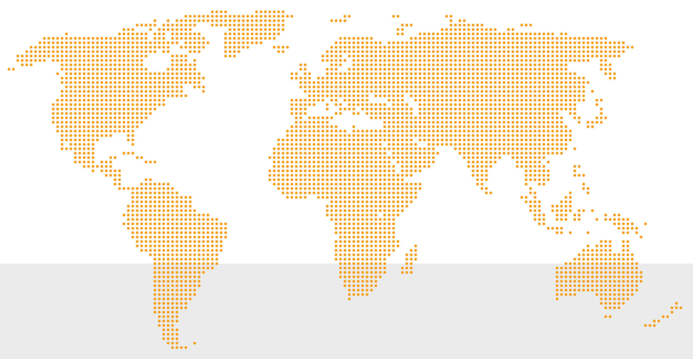
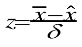

International Standards · ISL
Edition 2016 (v9.0) (version 9.0) · effective 2 June 2016 · superseded
Retrieved on 25 November 2026 from https://www.wada-ama.org/sites/default/files/resources/files/isl_june_2016.pdf
Editions: 2027 (current) · 2021 · 2019 (v10.0) · 2016 (v9.0) · 2015 (v8.0) · 2012 (v7.0) · 2009 (v6.0) · 2008 (v5.0) · 2004 (v4.0)
p. 1
International Standard for Laboratories

p. 2
The World Anti-Doping Code International Standard for Laboratories (ISL) is a mandatory International Standard developed as part of the World Anti-Doping Program.
The International Standard for Laboratories first came into effect in November 2002. Further revisions were made after that date. The enclosed International Standard for Laboratories was approved by the WADA Executive Committee on 11 May 2016. The effective date of ISL version 9.0 is 02 June 2016.
The official text of the ISL shall be maintained by WADA and shall be published in English and French. In the event of any conflict between the English and French versions, the English version shall prevail.
Published by:
World Anti-Doping Agency Stock Exchange Tower 800 Place Victoria (Suite 1700) PO Box 120 Montreal, Quebec Canada H4Z 1B7
URL: www.wada-ama.org
Tel: +1 514 904 9232 Fax: +1 514 904 8650 E-mail: code@wada-ama.org
p. 3
p. 4
p. 5
p. 6
PART ONE: INTRODUCTION, CODE PROVISIONS AND DEFINITIONS
1.0 Introduction, Scope and References
The main purpose of the International Standard for Laboratories (ISL) is to ensure laboratory production of valid test results and evidentiary data and to achieve uniform and harmonized results and reporting from all Laboratories.
The ISL includes requirements for obtaining and maintaining WADA accreditation of Laboratories, operating standards for laboratory performance and a description of the accreditation process.
WADA will publish, from time to time, specific technical requirements in a Technical Document. Implementation of the technical requirements described in the Technical Documents is mandatory and shall occur by the effective date specified in the Technical Document. Technical Documents supersede any previous publication on a similar topic, or if applicable, this document. The document in effect shall be that Technical Document whose effective date most recently precedes that of Sample receipt date. The current version of the Technical Document will be available on WADA's website. Technical Documents are posted on WADA's website when approved by the WADA Executive Committee and may be applied prior to the effective date for implementation.
The ISL, including all Annexes and Technical Documents, is mandatory for all Signatories to the Code.
The World Anti-Doping Program encompasses all of the elements needed in order to ensure optimal harmonization and best practice in international and national anti-doping programs. The main elements are: the Code (Level 1), International Standards (Level 2), and Models of Best Practice and Guidelines (Level 3).
In the introduction to the World Anti-Doping Code (Code), the purpose and implementation of the International Standards are summarized as follows:
"International Standards for different technical and operational areas within the anti-doping program have been and will be developed in consultation with the Signatories and governments and approved by WADA. The purpose of the International Standards is harmonization among Anti-Doping Organizations responsible for specific technical and operational parts of anti-doping programs. Adherence to the International Standards is mandatory for compliance with the Code. The International Standards may be revised from time to time by the WADA Executive Committee after reasonable consultation with the Signatories, governments and other relevant stakeholders. International Standards and all revisions will be published on the WADA website and shall become effective on the date specified in the International Standard or revision."
p. 7
Compliance with an International Standard (as opposed to another alternative standard, practice or procedure) shall be sufficient to conclude that the procedures covered by the International Standard were performed properly. A Laboratory's failure to follow a requirement in effect at the time of Sample analysis which has subsequently been eliminated from this International Standard for Laboratories or applicable Technical Document at the time of a hearing shall not be a defense to an anti-doping rule violation.
This document sets out the requirements for Laboratories that wish to demonstrate that they are technically competent, operate an effective quality management system, and are able to produce forensically valid results. Doping Control analysis involves the detection, identification, and in some cases demonstration of the presence greater than a threshold concentration or ratio of measured analytical values (e.g. concentrations, chromatogram peak height or area) of drugs and other substances in human biological fluids or tissues as identified on the List of Prohibited Substances and Prohibited Methods (the Prohibited List). Laboratories may undertake other forms of analysis, within the limits of the Code of Ethics, which are not under the scope of WADA Accreditation (e.g. Equine testing, Forensic testing). Any such testing shall not be covered by WADA Accreditation.
The Laboratory accreditation framework consists of two main elements: Part Two of the ISL (the Laboratory accreditation requirements and operating standards); and Part Three (the Annexes). Part Two describes the requirements necessary to obtain WADA accreditation and the procedures involved to fulfill the requirements. It also includes the application of ISO/IEC 17025¹ to the field of Doping Control. The purpose of this section of the document is to facilitate consistent application and assessment of ISO/IEC 17025 and the specific WADA requirements for Doping Control by accreditation bodies that operate in accordance with ISO/IEC 17011. The International Standard also sets forth the requirements for Laboratories when adjudication results as a consequence of an Adverse Analytical Finding.
Part Three of the ISL includes all Annexes. Annex A describes the WADA External Quality Assessment Scheme (EQAS), including performance criteria necessary to maintain WADA accreditation. Annex B describes the ethical standards required for continued WADA accreditation of the Laboratory. Technical Documents are issued, modified, and deleted by WADA from time to time and provide direction to the Laboratories and other stakeholders on specific technical issues. Once promulgated, Technical Documents become an integral part of the ISL. The incorporation of the provisions of the approved WADA Technical Documents into the Laboratory's quality management system is mandatory for WADA accreditation.
In order to harmonize the accreditation of Laboratories to the requirements of ISO/IEC 17025 and the WADA-specific requirements for accreditation, national accreditation bodies will use the ISL, including the Annexes and Technical Documents, as reference documents in their assessment process.
Maintenance of a Laboratory's accreditation by WADA is based on satisfactory performance in the WADA EQAS and routine testing. A Laboratory's EQAS performance is also continually monitored by WADA and reviewed as part of their ISO accreditation body assessment process. Therefore a Laboratory's EQAS results shall not be subject to challenge or to demands to produce Laboratory EQAS results or related EQAS documentation.
p. 8
Terms defined in the Code, which are included in this standard, are written in italics. Terms, which are defined in the ISL, are underlined.
¹Current version of ISO/IEC 17025
2.0 Code Provisions
The following articles in the Code directly address the ISL:
Code Article 2 ANTI-DOPING RULE VIOLATIONS
2.1 Presence of a Prohibited Substance or its Metabolites or Markers in an Athlete's Sample.
2.1.1 It is each Athlete's personal duty to ensure that no Prohibited Substance enters his or her body. Athletes are responsible for any Prohibited Substance or its Metabolites or Markers found to be present in their Samples. Accordingly, it is not necessary that intent, Fault, negligence or knowing Use on the Athlete's part be demonstrated in order to establish an anti-doping rule violation under Article 2.1.
[Comment to Article 2.1.1: An anti-doping rule violation is committed under this Article without regard to an Athlete's Fault. This rule has been referred to in various CAS decisions as "Strict Liability". An Athlete's Fault is taken into consideration in determining the Consequences of this anti-doping rule violation under Article 10. This principle has consistently been upheld by CAS.]
2.1.2 Sufficient proof of an anti-doping rule violation under Article 2.1 is established by any of the following: presence of a Prohibited Substance or its Metabolites or Markers in the Athlete's A Sample where the Athlete waives analysis of the B Sample and the B Sample is not analyzed; or, where the Athlete's B Sample is analyzed and the analysis of the Athlete's B Sample confirms the presence of the Prohibited Substance or its Metabolites or Markers found in the Athlete's A Sample; or, where the Athlete's B Sample is split into two bottles and the analysis of the second bottle confirms the presence of the Prohibited Substance or its Metabolites or Markers found in the first bottle.
[Comment to Article 2.1.2: The Anti-Doping Organization with results management responsibility may, at its discretion, choose to have the B Sample analyzed even if the Athlete does not request the analysis of the B Sample.]
2.1.3 Excepting those substances for which a quantitative threshold is specifically identified in the Prohibited List, the presence of any quantity p. 9 of a Prohibited Substance or its Metabolites or Markers in an Athlete's Sample shall constitute an anti-doping rule violation.
2.1.4 As an exception to the general rule of Article 2.1, the Prohibited List or International Standards may establish special criteria for the evaluation of Prohibited Substances that can also be produced endogenously.
2.2 Use or Attempted Use by an Athlete of a Prohibited Substance or a Prohibited Method.
[Comment to Article 2.2: It has always been the case that Use or Attempted Use of a Prohibited Substance or Prohibited Method may be established by any reliable means. As noted in the Comment to Article 3.2, unlike the proof required to establish an anti-doping rule violation under Article 2.1, Use or Attempted Use may also be established by other reliable means such as admissions by the Athlete, witness statements, documentary evidence, conclusions drawn from longitudinal profiling, including data collected as part of the Athlete Biological Passport, or other analytical information which does not otherwise satisfy all the requirements to establish "Presence" of a Prohibited Substance under Article 2.1.
For example, Use may be established based upon reliable analytical data from the analysis of an A Sample (without confirmation from an analysis of a B Sample) or from the analysis of a B Sample alone where the Anti-Doping Organization provides a satisfactory explanation for the lack of confirmation in the other Sample.]
2.2.1 It is each Athlete's personal duty to ensure that no Prohibited Substance enters his or her body and that no Prohibited Method is Used. Accordingly, it is not necessary that intent, Fault, negligence or knowing Use on the Athlete's part be demonstrated in order to establish an anti-doping rule violation for Use of a Prohibited Substance or a Prohibited Method.
2.2.2 The success or failure of the Use or Attempted Use of a Prohibited Substance or Prohibited Method is not material. It is sufficient that the Prohibited Substance or Prohibited Method was Used or Attempted to be Used for an anti-doping rule violation to be committed.
[Comment to Article 2.2.2: Demonstrating the "Attempted Use" of a Prohibited Substance or a Prohibited Method requires proof of intent on the Athlete's part. The fact that intent may be required to prove this particular anti-doping rule violation does not undermine the Strict Liability principle established for violations of Article 2.1 and violations of Article 2.2 in respect of Use of a Prohibited Substance or Prohibited Method.
An Athlete's Use of a Prohibited Substance constitutes an anti-doping rule violation unless such substance is not prohibited Out-of-Competition and the Athlete's Use takes place Out-of-Competition. (However, the presence of a Prohibited Substance or its Metabolites or Markers in a Sample collected In-Competition is a violation of Article 2.1 regardless of when that substance might have been administered.)]
p. 10
2.5 Tampering or Attempted Tampering with any part of Doping Control.
Conduct which subverts the Doping Control process but which would not otherwise be included in the definition of Prohibited Methods. Tampering shall include, without limitation, intentionally interfering or attempting to interfere with a Doping Control official, providing fraudulent information to an Anti-Doping Organization or intimidating or attempting to intimidate a potential witness.
[Comment to Article 2.5: For example, this Article would prohibit altering identification numbers on a Doping Control form during Testing, breaking the B bottle at the time of B Sample analysis, or altering a Sample by the addition of a foreign substance.
Offensive conduct towards a Doping Control official or other Person involved in Doping Control which does not otherwise constitute Tampering shall be addressed in the disciplinary rules of sport organizations.]
Code Article 3 PROOF OF DOPING
3.2 Methods of Establishing Facts and Presumptions
3.2.1 Analytical methods or decision limits approved by WADA after consultation within the relevant scientific community and which have been the subject of peer review are presumed to be scientifically valid. Any Athlete or other Person seeking to rebut this presumption of scientific validity shall, as a condition precedent to any such challenge, first notify WADA of the challenge and the basis of the challenge. CAS on its own initiative may also inform WADA of any such challenge. At WADA's request, the CAS panel shall appoint an appropriate scientific expert to assist the panel in its evaluation of the challenge. Within 10 days of WADA's receipt of such notice, and WADA's receipt of the CAS file, WADA shall also have the right to intervene as a party, appear amicus curiae or otherwise provide evidence in such proceeding.
3.2.2 WADA-accredited laboratories, and other laboratories approved by WADA, are presumed to have conducted Sample analysis and custodial procedures in accordance with the International Standard for Laboratories. The Athlete or other Person may rebut this presumption by establishing that a departure from the International Standard for Laboratories occurred which could reasonably have caused the Adverse Analytical Finding.
If the Athlete or other Person rebuts the preceding presumption by showing that a departure from the International Standard for Laboratories occurred which could reasonably have caused the Adverse Analytical Finding, then the Anti-Doping Organization shall have the burden to establish that such departure did not cause the Adverse Analytical Finding.
p. 11
[Comment to Article 3.2.2: The burden is on the Athlete or other Person to establish, by a balance of probability, a departure from the International Standard for Laboratories that could reasonably have caused the Adverse Analytical Finding. If the Athlete or other Person does so, the burden shifts to the Anti-Doping Organization to prove to the comfortable satisfaction of the hearing panel that the departure did not cause the Adverse Analytical Finding.]
Code Article 6 ANALYSIS OF SAMPLES
Samples shall be analyzed in accordance with the following principles:
6.1 Use of Accredited and Approved Laboratories
For purposes of Article 2.1, Samples shall be analyzed only in WADA-accredited laboratories or laboratories otherwise approved by WADA. The choice of the WADA-accredited or WADA-approved laboratory used for the Sample analysis shall be determined exclusively by the Anti-Doping Organization responsible for results management.
[Comment to Article 6.1: For cost and geographic access reasons, WADA may approve laboratories which are not WADA-accredited to perform particular analyses, for example, analysis of blood which should be delivered from the collection site to the laboratory within a set deadline. Before approving any such laboratory, WADA will ensure it meets the high analytical and custodial standards required by WADA.
Violations of Article 2.1 may be established only by Sample analysis performed by a WADA-accredited laboratory or another laboratory approved by WADA. Violations of other Articles may be established using analytical results from other laboratories so long as the results are reliable.]
6.2 Purpose of Analysis of Samples
Samples shall be analyzed to detect Prohibited Substances and Prohibited Methods identified on the Prohibited List and other substances as may be directed by WADA pursuant to Article 4.5, or to assist an Anti-Doping Organization in profiling relevant parameters in an Athlete's urine, blood or other matrix, including DNA or genomic profiling, or for any other legitimate anti-doping purpose. Samples may be collected and stored for future analysis.
[Comment to Article 6.2: For example, relevant profile information could be used to direct Target Testing or to support an anti-doping rule violation proceeding under Article 2.2, or both.]
p. 12
6.3 Research on Samples
No Sample may be used for research without the Athlete's written consent. Samples used for purposes other than Article 6.2 shall have any means of identification removed such that they cannot be traced back to a particular Athlete.
[Comment to Article 6.3: As is the case in most medical contexts, use of anonymized Samples for quality assurance, quality improvement, or to establish reference populations is not considered research.]
6.4 Standards for Sample Analysis and Reporting
Laboratories shall analyze Samples and report results in conformity with the International Standard for Laboratories. To ensure effective Testing, the Technical Document referenced at Article 5.4.1 will establish risk assessment-based Sample analysis menus appropriate for particular sports and sport disciplines, and laboratories shall analyze Samples in conformity with those menus, except as follows:
6.4.1 Anti-Doping Organizations may request that laboratories analyze their Samples using more extensive menus than those described in the Technical Document.
6.4.2 Anti-Doping Organizations may request that laboratories analyze their Samples using less extensive menus than those described in the Technical Document only if they have satisfied WADA that, because of the particular circumstances of their country or sport, as set out in their test distribution plan, less extensive analysis would be appropriate.
6.4.3 As provided in the International Standard for Laboratories, laboratories at their own initiative and expense may analyze Samples for Prohibited Substances or Prohibited Methods not included on the Sample analysis menu described in the Technical Document or specified by the Testing authority. Results from any such analysis shall be reported and have the same validity and consequence as any other analytical result.
[Comment to Article 6.4: The objective of this Article is to extend the principle of "intelligent Testing" to the Sample analysis menu so as to most effectively and efficiently detect doping. It is recognized that the resources available to fight doping are limited and that increasing the Sample analysis menu may, in some sports and countries, reduce the number of Samples which can be analyzed.]
p. 13
6.5 Further Analysis of Samples
Any Sample may be subject to further analysis by the Anti-Doping Organization responsible for results management at any time before both the A and B Sample analytical results (or A Sample result where B Sample analysis has been waived or will not be performed) have been communicated by the Anti-Doping Organization to the Athlete as the asserted basis for an Article 2.1 anti-doping rule violation.
Samples may be stored and subjected to further analyses for the purpose of Article 6.2 at any time exclusively at the direction of the Anti-Doping Organization that initiated and directed Sample collection or WADA. (Any Sample storage or further analysis initiated by WADA shall be at WADA's expense.) Further analysis of Samples shall conform with the requirements of the International Standard for Laboratories and the International Standard for Testing and Investigations.
Code Article 13 APPEALS
13.7 Appeals from Decisions Suspending or Revoking Laboratory Accreditation.
Decisions by WADA to suspend or revoke a laboratory's WADA accreditation may be appealed only by that laboratory with the appeal being exclusively to CAS.
Code Article 14 CONFIDENTIALITY AND REPORTING
14.1 Information Concerning Adverse Analytical Findings, Atypical Findings, and other Asserted Anti-Doping Rule Violations.
14.1.1 Notice of Anti-Doping Rule Violations to Athletes and other Persons.
The form and manner of notice of an asserted anti-doping rule violation shall be as provided in the rules of the Anti-Doping Organization with results management responsibility.
14.1.2 Notice of Anti-Doping Rule Violations to National Anti-Doping Organizations, International Federations, and WADA.
The Anti-Doping Organization with results management responsibility shall also notify the Athlete's National Anti-Doping Organization, International Federation and WADA of the assertion of an anti-doping rule violation simultaneously with the notice to the Athlete or other Person.
14.1.3 Content of an Anti-Doping Rule Violation Notice.
Notification shall include: the Athlete's name, country, sport and discipline within the sport, the Athlete's competitive level, whether the test was In-Competition or Out-of-Competition, the date of Sample collection, the analytical result reported by the laboratory and other information as required by the International Standard for Testing and Investigations, or, for anti-doping rule violations other than Article 2.1, the rule violated and the basis of the asserted violation.
p. 14
14.1.4 Status Reports.
Except with respect to investigations which have not resulted in notice of an anti-doping rule violation pursuant to Article 14.1.1, the Anti-Doping Organizations referenced in Article 14.1.2 shall be regularly updated on the status and findings of any review or proceedings conducted pursuant to Article 7, 8 or 13 and shall be provided with a prompt written reasoned explanation or decision explaining the resolution of the matter.
14.1.5 Confidentiality.
The recipient organizations shall not disclose this information beyond those Persons with a need to know (which would include the appropriate personnel at the applicable National Olympic Committee, National Federation, and team in a Team Sport) until the Anti-Doping Organization with results management responsibility has made Public Disclosure or has failed to make Public Disclosure as required in Article 14.3.
[Comment to Article 14.1.5: Each Anti-Doping Organization shall provide, in its own anti-doping rules, procedures for the protection of confidential information and for investigating and disciplining improper disclosure of confidential information by any employee or agent of the Anti-Doping Organization.]
p. 15
3.0 Terms and Definitions
3.1 Code defined terms
ADAMS: The Anti-Doping Administration and Management System is a Web-based database management tool for data entry, storage, sharing, and reporting designed to assist stakeholders and WADA in their anti-doping operations in conjunction with data protection legislation.
Adverse Analytical Finding: A report from a *WADA-*accredited laboratory or other WADA-approved laboratory that, consistent with the International Standard for Laboratories and related Technical Documents, identifies in a Sample the presence of a Prohibited Substance or its Metabolites or Markers (including elevated quantities of endogenous substances) or evidence of the Use of a Prohibited Method.
Adverse Passport Finding: A report identified as an Adverse Passport Finding as described in the applicable International Standards.
Anti-Doping Organization: A Signatory that is responsible for adopting rules for initiating, implementing or enforcing any part of the Doping Control process. This includes, for example, the International Olympic Committee, the International Paralympic Committee, other Major Event Organizations that conduct Testing at their Events, WADA, International Federations, and National Anti-Doping Organizations.
Athlete: Any Person who competes in sport at the international level (as defined by each International Federation) or the national level (as defined by each National Anti-Doping Organization). An Anti-Doping Organization has discretion to apply anti-doping rules to an Athlete who is neither an International-Level Athlete nor a National-Level Athlete, and thus to bring them within the definition of "Athlete." In relation to Athletes who are neither International-Level nor National-Level Athletes, an Anti-Doping Organization may elect to: conduct limited Testing or no Testing at all; analyze Samples for less than the full menu of Prohibited Substances; require limited or no whereabouts information; or not require advance TUEs. However, if an Article 2.1, 2.3 or 2.5 anti-doping rule violation is committed by any Athlete over whom an Anti-Doping Organization has authority who competes below the international or national level, then the Consequences set forth in the Code (except Article 14.3.2) must be applied. For purposes of Article 2.8 and Article 2.9 and for purposes of anti-doping information and education, any Person who participates in sport under the authority of any Signatory, government, or other sports organization accepting the Code is an Athlete.
[Comment: This definition makes it clear that all International- and National-Level Athletes are subject to the anti-doping rules of the Code, with the precise definitions of international- and national-level sport to be set forth in the anti-doping rules of the International Federations and National Anti-Doping Organizations, respectively. The definition also allows each National Anti-Doping Organization, if it chooses to do so, to expand its anti-doping program beyond International- or National-Level Athletes to competitors at lower levels of Competition or to individuals who engage in fitness activities but do not compete at all. Thus, a National Anti-Doping Organization could, for example, elect to test recreational-level competitors but not require advance TUEs. But an anti-doping rule violation involving an Adverse Analytical Finding or Tampering results in all of the Consequences provided for in the Code (with the exception of Article 14.3.2). The decision on whether Consequences apply to recreational-level Athletes who engage in fitness activities but never compete is left to the National Anti-Doping Organization. In the same manner, a Major Event Organization holding an Event only for masters-level competitors could elect to test the competitors but not analyze Samples for the full menu of Prohibited Substances. Competitors at all levels of Competition should receive the benefit of anti-doping information and education.]
p. 16
Athlete Biological Passport: The program and methods of gathering and collating data as described in the International Standard for Testing and Investigations and International Standard for Laboratories.
Atypical Finding: A report from a WADA-accredited laboratory or other WADA-approved laboratory which requires further investigation as provided by the International Standard for Laboratories or related Technical Documents prior to the determination of an Adverse Analytical Finding.
Atypical Passport Finding: A report described as an Atypical Passport Finding as described in the applicable International Standards.
CAS: The Court of Arbitration for Sport.
Code: The World Anti-Doping Code.
Competition: A single race, match, game or singular sport contest. For example, a basketball game or the finals of the Olympic 100-meter race in athletics. For stage races and other sport contests where prizes are awarded on a daily or other interim basis the distinction between a Competition and an Event will be as provided in the rules of the applicable International Federation.
Doping Control: All steps and processes from test distribution planning through to ultimate disposition of any appeal including all steps and processes in between such as provision of whereabouts information, Sample collection and handling, laboratory analysis, TUEs, results management and hearings.
Event: A series of individual Competitions conducted together under one ruling body (e.g., the Olympic Games, FINA World Championships, or Pan American Games).
In-Competition: Unless provided otherwise in the rules of an International Federation or the ruling body of the Event in question, "In-Competition" means the period commencing twelve hours before a Competition in which the Athlete is scheduled to participate through the end of such Competition and the Sample collection process related to such Competition.
[Comment: An International Federation or ruling body for an Event may establish an "In-Competition" period that is different than the Event Period.]
International Standard: A standard adopted by WADA in support of the Code. Compliance with an International Standard (as opposed to another alternative standard, practice or procedure) shall be sufficient to conclude that the procedures addressed by the International Standard were performed properly. International Standards shall include any Technical Documents issued pursuant to the International Standard. Major Event Organizations: The continental associations of National Olympic Committees and other international multi-sport organizations that function as the ruling body for any continental, regional or other International Event. Marker: A compound, group of compounds or biological variable(s) that indicates the Use of a Prohibited Substance or Prohibited Method. Metabolite: Any substance produced by a biotransformation process. National Anti-Doping Organization: The entity(ies) designated by each country as possessing the primary authority and responsibility to adopt and implement anti-doping rules, direct the collection of Samples, the management of test results, and the conduct of hearings at the national level. If this designation has not been made by the competent public authority(ies), the entity shall be the country's National Olympic Committee or its designee. National Olympic Committee: The organization recognized by the International Olympic Committee. The term National Olympic Committee shall also include the National Sport Confederation in those countries where the National Sport Confederation assumes typical National Olympic Committee responsibilities in the anti-doping area. Out-of-Competition: Any period which is not In-Competition. Person: A natural Person or an organization or other entity. Prohibited List: The List identifying the Prohibited Substances and Prohibited Methods. Prohibited Method: Any method so described on the Prohibited List. Prohibited Substance: Any substance, or class of substances, so described on the Prohibited List. Publicly Disclose or Publicly Report: See Consequences of Anti-Doping Rule Violations in the Code. "The dissemination or distribution of information to the general public or Persons beyond those Persons entitled to earlier notification in accordance with Article 14. Teams in Team Sports may also be subject to Consequences as provided in Article 11." Sample or Specimen: Any biological material collected for the purposes of Doping Control. [Comment: It has sometimes been claimed that the collection of blood Samples violates the tenets of certain religious or cultural groups. It has been determined that there is no basis for any such claim.] Signatories: Those entities signing the Code and agreeing to comply with the Code, as provided in Article 23. Tampering: Altering for an improper purpose or in an improper way; bringing improper influence to bear; interfering improperly; obstructing, misleading or engaging in any fraudulent conduct to alter results or prevent normal procedures from occurring.
p. 18
Target Testing: Selection of specific Athletes for Testing based on criteria set forth in the International Standard for Testing and Investigations.
Testing: The parts of the Doping Control process involving test distribution planning, Sample collection, Sample handling, and Sample transport to the laboratory.
TUE: Therapeutic Use Exemption, as described in Article 4.4.
Use: The utilization, application, ingestion, injection or consumption by any means whatsoever of any Prohibited Substance or Prohibited Method.
WADA: The World Anti-Doping Agency.
[Comment: Defined terms shall include their plural and possessive forms, as well as those terms used as other parts of speech.]
p. 19
3.2 ISL and related Technical Documents defined Terms
Adaptive Model: A mathematical model that was designed to identify unusual longitudinal results from Athletes. The model calculates the probability of a longitudinal profile of Marker values assuming, that the Athlete has a normal physiological condition.
Aliquot: A portion of the Sample of biological fluid or tissue (e.g. urine, blood) obtained from the Athlete used in the analytical process.
Analytical Testing: The parts of the Doping Control process involving Sample handling, analysis and reporting following receipt in the Laboratory.
Athlete Passport Management Unit (APMU): A unit composed of a Person or Persons, designated by the Anti-Doping Organization, responsible for the administrative management of the Passports advising the Anti-Doping Organization for intelligent, Targeted Testing liaising with the Expert Panel compiling and authorizing an Athlete Biological Passport Documentation Package and reporting Adverse Passport Findings.
Certified Reference Material: Reference Material, characterized by a metrologically valid procedure for one or more specified properties, accompanied by a certificate that provides the value of the specified property, its associated uncertainty and a statement of metrological traceability.
Confirmation Procedure: An analytical test procedure whose purpose is to identify the presence or to measure the concentration/ratio of one or more specific Prohibited Substances, Metabolite(s) of a Prohibited Substance, or Marker(s) of the Use of a Prohibited Substance or Method in a Sample.
[Comment: A Confirmation Procedure for a threshold substance shall also indicate a concentration/ratio of the Prohibited Substance greater than the applicable Decision Limit (as noted in the TD DL).]
Decision Limit: a concentration, accounting for the maximum permitted combined uncertainty, above which an Adverse Analytical Finding shall be reported.
Fit(ness)-for-purpose: suitable for the intended purpose and compliant to the ISO/IEC 17025 or 15189, ISL and applicable technical documents.
Flexible Scope of Accreditation: Process for a Laboratory to make and implement restricted modifications in the scope of the accreditation prior to the assessment by the national accreditation body. Please see section 4.4.12 for a detailed description of Flexible Scope of Accreditation.
Further Analysis: Any analysis for any substance or method except where an Athlete has previously been notified of an asserted anti-doping rule violation based on an Adverse Analytical Finding for that substance or method.
Initial Testing Procedure: An analytical test procedure whose purpose is to identify those Samples which may contain a Prohibited Substance, Metabolite(s) of a Prohibited Substance, or Marker(s) of the Use of a Prohibited Substance or Prohibited Method or the quantity of a Prohibited Substance, Metabolite(s) of a Prohibited Substance, or Marker(s) of the Use of a Prohibited Substance or Prohibited Method.
p. 20
Intermediate Precision: Variation in results observed when one or more factors, such as time, equipment, or operator are varied within a Laboratory.
International Standard for Laboratories (ISL): The International Standard applicable to Laboratories as set forth herein.
Laboratory Internal Chain of Custody: Documentation of the sequence of Persons in custody of the Sample and any Aliquot of the Sample taken for Analytical Testing.
[Comment: Laboratory Internal Chain of Custody is generally documented by a written record of the date, location, action taken, and the individual performing an action with a Sample or Aliquot.]
Laboratory(ies): (A) WADA-accredited laboratory(ies) applying test methods and processes to provide evidentiary data for the detection of Prohibited Substances, Methods or Markers on the Prohibited List and, if applicable, quantification of a Threshold Substance in Samples of urine and other biological matrices in the context of anti-doping activities.
Laboratory Documentation Packages: The material produced by the Laboratory to support an analytical result such as an Adverse Analytical Finding as set forth in the WADA Technical Document for Laboratory Documentation Packages.
Major Event: A series of individual international Competitions conducted together under an international multi-sport organization functioning as a ruling body (e.g., the Olympic Games, Pan American Games) and for which a significant increase of resources and capacity, as determined by WADA, is required to conduct Doping Control for the Event.
Measurement Uncertainty (MU): Parameter associated with a measurement result that characterizes the dispersion of quantity values attributed to a measurand. [Comment: Knowledge of the MU increases the confidence in the validity of a measurement result.]
Minimum Required Performance Level (MRPL): concentration of a Prohibited Substance or Metabolite of a Prohibited Substance or Marker of a Prohibited Substance or Method that a doping Laboratory is expected to reliably detect and confirm in the routine daily operation of the Laboratory. See Technical Document Minimum Required Performance Levels for detection of Prohibited Substances.
Non-Threshold Substance: A substance listed on the Prohibited List for which the identification, in compliance with the Technical Document on the Identification Criteria for Qualitative Assays (TD IDCR), constitutes an Adverse Analytical Finding.
Presumptive Adverse Analytical Finding: The status of a Sample test result for which there is a suspicious result in the Initial Testing Procedure, but for which a confirmation test has not yet been performed.
Reference Collection: A collection of samples of known origin that may be used in the determination of the identity of an unknown substance. For example, a well characterized sample obtained from a controlled administration study in which scientific documentation of the identity of Metabolite(s) can be demonstrated.
p. 21
Reference Material: Material, sufficiently homogeneous and stable with respect to one or more specified properties, which has been established to be fit for its intended use in a measurement process.
Repeatability, sᵣ: Variability observed within a Laboratory, over a short time, using a single operator, item of equipment, etc.
Reproducibility, sR: Variability obtained when different Laboratories analyze the same Sample.
Revocation: The permanent withdrawal of a Laboratory's WADA accreditation.
Suspension: The temporary withdrawal of a Laboratory's WADA accreditation.
Threshold Substance: An exogenous or endogenous Prohibited Substance, Metabolite or Marker of a Prohibited Substance which is analyzed quantitatively and for which an analytical result (concentration, ratio or score) in excess of a pre-determined Decision Limit constitutes an Adverse Analytical Finding. Threshold Substances are identified as such in the Technical Document on Decision Limits (TD DL).
WADA-Approved Laboratory for the ABP: Laboratory(ies) not otherwise accredited by WADA; applying test methods and processes in support of an Athlete Biological Passport program and in accordance with the criteria for approval of non-accredited laboratories for the Athlete Biological Passport.
3.3 International Standard for Testing and Investigations (ISTI) Defined Terms
Results Management Authority: The organization that is responsible, in accordance with Code Article 7.1, for the management of the results of Testing (or other evidence of a potential anti-doping rule violation) and hearings, whether (1) an Anti-Doping Organization (for example, the International Olympic Committee or other Major Event Organization, WADA, an International Federation, or a National Anti-Doping Organization); or (2) another organization acting pursuant to the authority of and in accordance with the rules of the Anti-Doping Organization (for example, a National Federation that is a member of an International Federation). In respect of Whereabouts Failures, the Results Management Authority shall be as set out in Article I.5.1.
Sample Collection Authority: The organisation that is responsible for the collection of Samples in compliance with the requirements of the International Standard for Testing and Investigations, whether (1) the Testing Authority itself; or (2) another organization (for example, a third party contractor) to whom the Testing Authority has delegated or sub-contracted such responsibility (provided that the Testing Authority always remains ultimately responsible under the Code for compliance with the requirements of the International Standard for Testing and Investigations relating to collection of Samples).
Test Distribution Plan: A document written by an Anti-Doping Organization that plans Testing on Athletes over whom it has Testing Authority, in accordance with the requirements of Article 4 of the International Standard for Testing and Investigations.
p. 22
Testing Authority: The organization that has authorized a particular Sample collection, whether (1) an Anti-Doping Organization (for example, the International Olympic Committee or other Major Event Organization, WADA, an International Federation, or a National Anti-Doping Organization); or (2) another organization conducting Testing pursuant to the authority of and in accordance with the rules of the Anti-Doping Organization (for example, a National Federation that is a member of an International Federation).
p. 23
PART TWO: LABORATORY ACCREDITATION REQUIREMENTS AND OPERATING STANDARDS
4.0 Process and Requirements for WADA Accreditation
This section describes the specific requirements that a laboratory shall fulfill in the process of applying for, obtaining, and maintaining WADA accreditation including requirements for Major Events.
4.1 Applying for a WADA Laboratory Accreditation
4.1.1 Expression of interest
The candidate laboratory shall officially contact WADA in writing to express its interest in the WADA accreditation process.
4.1.2 Submitting initial application form
The candidate laboratory shall complete the necessary information in the Application Form as provided by WADA and deliver this to WADA. The Application shall be signed by the Laboratory Director and, if relevant, by the Director of the host organization.
At this stage, WADA will verify the existence of a National Anti-Doping Program (compliant with the Code and International Standards) in the country where the candidate laboratory is located, the ratification of the UNESCO Convention against Doping in Sport by the host country of the candidate laboratory, as well as the payment of the nation's financial contributions to WADA.
4.1.3 Providing letter(s) of support
Upon successful completion of the above, the candidate laboratory shall be requested by WADA to provide an official letter of support from Signatory Anti-Doping Organization(s). Such letter(s) of support will guarantee that annually a minimum of 3000 Samples from Code-compliant clients (as determined by WADA) will be provided to the laboratory for a three (3) year period within two (2) years of obtaining accreditation. The candidate laboratory shall submit a business plan which is accompanied with letters of support from entities acceptable to WADA (e.g. universities, hospitals, private organization and/or public authorities) that:
- Guarantee sufficient annual financial support for a minimum of 3 years;
- Guarantee the necessary analytical facilities and instrumentation;
- Support for research and development activities;
p. 24
4.1.4 Description of the candidate laboratory
The candidate laboratory shall then complete a detailed questionnaire provided by WADA and submit it to WADA no later than eight (8) weeks following the receipt of the questionnaire. The questionnaire will include, but is not limited to, the following:
- Staff list and their qualifications;
- Description of physical facilities, including a description of the security considerations for Samples and records;
- List of proposed and actual instrumental resources and equipment;
- Method validation data;
- List of available Reference Materials and/or standards, or plans to acquire Reference Materials and/or standards, including properly validated biological Sample Reference Collections;
- Business plan for the laboratory demonstrating commitment to analyse 3000 Samples from Code-compliant Testing Authorities (as determined by WADA) annually, within two (2) years of receiving accreditation;
- List of sponsors of the laboratory.
WADA may require an update of this documentation during the process of accreditation.
4.1.5 Conducting initial visit
WADA usually conducts an initial visit (2-3 days) to the candidate laboratory at the candidate laboratory's expense. The purpose of this visit is to clarify issues with regard to the accreditation process and the defined requirements in the ISL and to obtain information about different aspects of the laboratory relevant for the accreditation. Such a visit could be conducted prior to or during the accreditation process.
4.1.6 Issuing final report and recommendation
Within approximately twelve (12) weeks after the initial visit or the receipt of the questionnaire, WADA will complete and submit a report to the candidate laboratory. In the report WADA will make the necessary recommendations with respect to granting the candidate laboratory the status of WADA probationary laboratory or, if this is not the case, identify needed improvements in order to be considered a WADA probationary laboratory.
4.1.7 Initial accreditation fee
Prior to entering the probationary period, the candidate laboratory shall pay to WADA a one time non-refundable fee to cover the costs related to the laboratory initial accreditation process. This fee shall be determined by WADA.
p. 25
4.1.8 Laboratory independence
The Laboratory shall be established and remain operationally independent from Anti-Doping Organizations to ensure full confidence in its competence, impartiality, judgment or operational integrity, in compliance with section 4.1.5d of ISO/IEC 17025. Operational independence implies that the Laboratory shall have a separate budget permitting the Laboratory to manage its own affairs without hindrance or interference.
4.1.9 Compliance with the Code of Ethics
The candidate laboratory shall implement and comply with the provision(s) in the Code of Ethics (Annex B) which are relevant for a laboratory in the probationary period. The laboratory shall communicate the Code of Ethics to all employees and ensure understanding of and commitment to the different aspects of the Code of Ethics. The candidate laboratory shall provide to WADA a letter of compliance with the Code of Ethics, signed by the laboratory Director.
4.2 Preparing for WADA Laboratory Accreditation
Prior to entering the probationary period, the candidate laboratory may be required to participate in a pre-probationary test, consisting of at least ten EQAS samples in order to assess its competence at that time. The pre-probationary test may be conducted in conjunction with an initial site visit as described in 4.1.5. The candidate laboratory shall successfully identify and document concentrations in excess of the threshold(s) or Minimum Required Performance Levels (MRPL), as applicable, of the Prohibited Substances, Metabolite(s) of Prohibited Substances, or Marker(s) of Prohibited Substances or Prohibited Methods within a time frame of ten to 15 working days as determined by WADA. The candidate laboratory shall provide a test report for each of the samples in the pre-probationary test. For negative samples, WADA may request all or a portion of the negative Initial Testing Procedure data. For selected samples for which there is an Adverse Analytical Finding, the candidate laboratory shall provide a Laboratory Documentation Package. Additional data to be provided upon WADA's request. The candidate laboratory's performance in the pre-probationary test shall be taken into consideration by WADA to gauge the laboratory's competence as well as allow WADA to provide feedback on areas in need of improvement. Corrective actions, if any, shall be conducted and reported by the laboratory upon request. Such testing will be taken into account in the overall review of the candidate laboratory's application and may affect the timeliness of the candidate laboratory's entry into the probationary phase of accreditation.
Upon successful completion of the provisions of section 4.1 and following official notification by WADA, a candidate laboratory enters the probationary phase of WADA accreditation under the title of a "WADA probationary laboratory". The probationary period shall incorporate at least 20 EQAS samples, typically distributed over multiple EQAS rounds, in order to prepare the probationary laboratory for the initial accreditation. During this period, WADA shall provide appropriate feedback to assist the laboratory in improving the quality of its testing process. In this period the laboratory shall successfully complete provisions 4.2.1 to 4.2.5.
p. 26
4.2.1 Obtaining ISO/IEC 17025 accreditation by the laboratory
The laboratory shall be accredited by a relevant accreditation body to ISO/IEC 17025 with primary reference to the interpretations and applications of the ISO/IEC 17025 requirements as described in the Application of ISO/IEC 17025 to the Analysis of Urine Doping Control Samples (Section 5.0) and the Application of ISO/IEC 17025 to the Analysis of Blood Doping Control Samples (Section 6.0). The relevant accreditation body shall be an International Laboratory Accreditation Cooperation (ILAC) full member that is a signatory to the ILAC Mutual Recognition Arrangement (ILAC MRA). The laboratory shall prepare and establish the required documentation and procedures according to the requirements in Application of ISO/IEC 17025 to the Analysis of Urine Doping Control Samples (Section 5.0) and the Application of ISO/IEC 17025 to the Analysis of Blood Doping Control Samples (Section 6.0), as applicable. Based on this, the laboratory shall initiate and prepare for the accreditation process by consulting with a relevant accreditation body. An assessment by the representative(s) of a relevant accreditation body, including an ISL-trained assessor, shall be conducted. The laboratory shall correct any identified non-conformities within defined time frames and document this accordingly.
Summaries of the Assessment Report and any documentation of correction of non-conformities, in English or French, should be sent to WADA by the relevant accreditation body. Should the laboratory prefer to send the information directly to WADA, the laboratory shall do so within a reasonable time frame.
The ISO/IEC 17025 accreditation shall be obtained before the end of the probationary period.
4.2.2 Participating in the WADA External Quality Assessment Scheme
During the probationary period the laboratory shall successfully analyze at least (18) EQAS samples in multiple rounds (See Annex A for a description of the EQAS).
After successful completion of the probationary period, as a final proficiency test, the laboratory shall analyze a minimum of (20) EQAS samples in the presence of WADA representatives. The final accreditation test shall assess both the scientific competence and the capability of the laboratory to manage multiple Samples. The probationary laboratory shall successfully identify and/or document a concentration in excess of the threshold or Minimum Required Performance Level (MRPL) of the Prohibited Substances, Metabolite(s) of Prohibited Substances, or Marker(s) of Prohibited Substances or Prohibited Methods within five calendar days of opening the samples. The probationary laboratory shall provide a Test Report for each of the samples in the proficiency test. For negative samples, WADA may request all or a portion of the negative Initial Testing Procedure data. For selected samples for which there is an Adverse Analytical Finding, the probationary laboratory shall provide a Laboratory Documentation Package. This documentation shall be submitted within two (2) weeks of WADA's request. Costs associated with the WADA on-site visit shall be at the laboratory's expense.
p. 27
4.2.3 Planning and implementing research and development activities
The probationary laboratory shall develop a plan for its research and development activities in the field of Doping Control within a three (3) year period including a budget. The probationary laboratory shall demonstrate in its budget an allocation to research and development activities in the field of Doping Control of at least 7% of the annual budget for the initial three year period. At least two research and development activities shall be initiated and implemented within the probationary period. The research activities can either be conducted by the laboratory alone or in cooperation with other *WADA-*accredited Laboratories or other research organizations.
4.2.4 Planning and implementing sharing of knowledge
The probationary laboratory shall demonstrate during the probationary period its willingness and ability to share knowledge with other WADA-accredited Laboratories. The probationary laboratory shall prepare and convey information and knowledge on at least two specific issues to the other WADA-accredited Laboratories within the probationary period. A description of this sharing is provided in the Code of Ethics (Annex B).
4.2.5 Professional liability insurance coverage
Probationary laboratories shall provide documentation to WADA that professional liability risk insurance coverage has been obtained to cover liability to an amount of no less than 2 million USD annually.
4.3 Obtaining WADA accreditation
4.3.1 Participating in a WADA accreditation audit
In the last phase of the probationary period WADA will prepare in cooperation with the laboratory a final WADA accreditation assessment. Compliance with the defined requirements in the Application of ISO/IEC 17025 to the Analysis of Urine Doping Control Samples (Section 5.0) and, if necessary, the Application of ISO/IEC 17025 to the Analysis of Blood Doping Control Samples (Section 6.0) and the practice and documentation of the laboratory will be assessed. If WADA has participated in the initial ISO/IEC 17025 assessment, the final WADA assessment may only consist of a document audit. Otherwise, the audit can be conducted together with the relevant accreditation body or separately if more practical. Should an on-site audit take place by WADA, the associated cost shall be at the laboratory's expense. Based on the audit, WADA will issue an Audit Report and submit this to the laboratory. If applicable, the laboratory shall correct identified non-compliances within defined time-frames and report these to WADA.
4.3.2 WADA report and recommendation
Based on the relevant documentation from the laboratory, the Audit Report(s) from WADA representative(s) and the Audit Report(s) from the relevant accreditation body, WADA will make a final report including a recommendation concerning the accreditation of the laboratory. The report and recommendation will be submitted to the WADA Executive Committee for approval. In the case where the recommendation is that the laboratory should not be accredited, the laboratory will have a maximum of six months to correct and improve specific parts of their operation, at which time a further report will be made by WADA.
p. 28
4.3.3 Issuing and publishing of accreditation certificate
A certificate signed by a duly authorized representative of WADA shall be issued in recognition of an accreditation. Such certificate shall specify the name of the Laboratory and the period for which the certificate is valid. Certificates may be issued after the effective date, with retroactive effect. A list of accredited Laboratories will be available on WADA's website.
4.4 Maintaining WADA accreditation
In order for the Laboratory to maintain its accreditation status, the Anti-Doping Organization of the country of the Laboratory (National Anti-Doping Organization and/or National Olympic Committee as applicable) shall be Code compliant (as determined by WADA) and the Laboratory host country shall maintain its status of a country having ratified the UNESCO Convention against Doping in Sport.
Should a Laboratory's accreditation be suspended in this context, the Suspension will be effective until the country ratifies the UNESCO Convention against Doping in Sport and/or until the non-compliant Anti-Doping Organization of the country of the Laboratory is taken out of the non-compliant list by WADA's Foundation Board. With the exception of the duration of the Suspension which shall be as defined above, the other ISL provisions with subject to the Suspension of a Laboratory's accreditation remain applicable.
WADA may decide not to suspend the Laboratory's accreditation in case of non-compliance of the Anti-Doping Organization of the country of the Laboratory if, in the year before the declaration of non-compliance, at least 60% of samples analyzed by that Laboratory were provided by Anti-Doping Organizations other than the Anti-Doping Organization of the country of the Laboratory, or if it is highly likely that in the year of the declaration of non-compliance at least 60% of samples analyzed by that Laboratory are going to be provided by Anti-Doping Organizations other than the Anti-Doping Organization of the country of the Laboratory.
4.4.1 Maintaining ISO/IEC 17025 accreditation
The Laboratory shall hold an accreditation from the relevant accreditation body, ILAC full member, signatory to ILAC MRA, according to ISO/IEC 17025 with primary reference to the interpretations and applications of the ISO/IEC 17025 requirements as described in the Application of ISO/IEC 17025 to the Analysis of Urine Doping Control Samples (Section 5.0) and the Application of ISO/IEC 17025 to the Analysis of Blood Doping Control Samples (Section 6.0), as applicable.
p. 29
4.4.2 Participate in the WADA External Quality Assessment Scheme
The *WADA-*accredited Laboratories are required to successfully participate in the WADA EQAS which is described in more detail in Annex A.
4.4.3 Laboratory independence
The Laboratory shall be operationally independent from any Anti-Doping Organization to ensure full confidence in its competence, impartiality, judgment or operational integrity, in compliance with section 4.1.5d of ISO/IEC 17025. Operational independence implies that the Laboratory shall have a separate budget permitting the Laboratory to manage its own affairs without hindrance or interference.
4.4.4 Documenting compliance with the WADA Laboratory Code of Ethics
The Laboratory shall annually provide to WADA a letter of compliance with the provisions of the Code of Ethics (Annex B), signed by the Laboratory Director. The Laboratory may be asked to provide documentation of compliance with the provisions of the Code of Ethics (Annex B).
4.4.5 Documenting implemented research and development activities
The Laboratory shall maintain a plan for research and development in the field of Doping Control, including an annual budget in this area of at least 7% of the total annual budget.
The Laboratory should document the publication of results of the research in relevant scientific papers in the peer-reviewed literature (at least one publication every two years). The list of scientific papers shall be made available to WADA upon request. The Laboratory may also demonstrate a research program by documenting successful or pending applications for research grants (at least one application submitted every three years).
The Laboratory shall supply an annual progress report to WADA documenting research and development results in the field of Doping Control and dissemination of the results. The Laboratory should also relate research and development plans for the next year.
4.4.6 Documenting implemented sharing of knowledge
The Laboratory shall demonstrate its willingness and ability to share knowledge with other WADA-accredited Laboratories. The Laboratory should make at least one annual contribution to an anti-doping symposium or conference. The Laboratory shall supply an annual report on sharing of knowledge with all other *WADA-*accredited Laboratories. A description of this sharing is provided in the Code of Ethics (Annex B).
p. 30
4.4.7 Maintaining professional liability insurance coverage
Laboratories shall provide documentation to WADA that professional liability risk insurance coverage is maintained to an amount no less than 2 million USD annually.
4.4.8 Providing renewed letter(s) of support
Letter(s) of support, as described in Section 4.1.3, from a National Anti-Doping Organization or National Olympic Committee responsible for a national Doping Control program or an International Federation responsible for an international Doping Control program shall be provided to WADA every two years confirming three years of support or unless otherwise approved by WADA.
4.4.9 Minimum number of Samples
In order to maintain proficiency, WADA accredited Laboratories are required, within two years of the effective date of the current version of the ISL, to analyze a minimum of 3000 Doping Control Samples provided annually by Code-compliant Testing Authorities (as determined by WADA) or as otherwise approved by WADA. WADA will monitor the number of Samples tested by the Laboratory. If the number of Samples falls below 3000 per year, WADA Laboratory accreditation may be suspended or revoked in accordance with sections 4.4.13.2.1, 4.4.13.2.2 and 4.4.14.
4.4.10 Publication of fee schedule
To assist Anti-Doping Organizations in developing Test Distribution Plans in relation to the use of different Sample analysis menus for various sports or sport disciplines, Laboratories shall publish, and provide to WADA, the most recent price list for each type of analytical method or service.
4.4.11 Participating in WADA/Accreditation Body re-assessments and surveillance assessments
WADA reserves the right to inspect and assess the Laboratory at any time. The notice of the assessment/inspection will be made in writing to the Laboratory Director. In exceptional circumstances, the assessment/inspection may be unannounced.
4.4.11.1 WADA/Accreditation Body re-assessment
The Laboratory shall receive ISO/IEC 17025 accreditation including compliance with the Application of ISO/IEC 17025 for the Analysis of Urine Doping Control Samples (Section 5.0) and Application of ISO/IEC 17025 for the Analysis of Blood Doping Control Samples (Section 6.0), as applicable. The assessment team shall include an ISL-trained assessor selected by the accreditation body for the on-site re-assessment.
Copies of the re-assessment summary report in English or French as well as the Laboratory responses should be sent in a timely fashion to WADA by the relevant accreditation body. Should the Laboratory prefer to provide the re-assessment summary report directly to WADA, then it shall do so within 30 days.
p. 31
The Laboratory shall provide to WADA a copy of the ISO/IEC 17025 certificate as soon as it is obtained from the relevant accreditation body.
4.4.11.2 Accreditation Body surveillance assessment
When a surveillance ISO/IEC 17025 assessment is required, a copy of the assessment summary report and evidence of corrective actions for any non-compliance(s), in English or French, should be sent to WADA by the relevant accreditation body. Should the Laboratory prefer to provide the assessment summary report directly to WADA, then it shall do so within 30 days.
4.4.11.3 WADA assessment
As part of an announced or unannounced assessment/inspection, WADA retains the right to request copies of Laboratory documentation and/or request re-analysis of selected A and/or B Samples either on-site or in another Laboratory of WADA's choice.
4.4.12 Flexible Scope of Accreditation
WADA-accredited Laboratories may modify or add analytes to existing scientific methods to expand their scope or develop new methods that involve technology already within the scope of accreditation without the need for approval by the body that completed the ISO/IEC 17025 accreditation of that Laboratory. Any new analytical method or procedure to Doping Control requiring expertise and technology outside the Laboratory scope of accreditation shall be properly validated by the Laboratory and be determined as Fit-for-purpose by WADA prior to first implementation by any Laboratory into the field of anti-doping analysis. WADA shall use whatever means deemed appropriate, including formal consultations with scientific expert working groups, and/or publication(s) in peer-reviewed scientific journal(s) to evaluate whether the test is Fit-for-purpose prior to providing approval. Before applying such a new method or procedure to the analysis of Doping Control Samples, but after the approval by WADA, the Laboratory shall obtain an extension of the scope of accreditation by a relevant accreditation body.
Inclusion of a method or procedure within the Laboratory's scope of ISO/IEC 17025 accreditation establishes that method or procedure as Fit-for-purpose and the Laboratory shall not be required to provide method validation documentation in support of an Adverse Analytical Finding.
4.4.13 WADA monitoring of accreditation status
WADA shall conduct a periodic review of compliance of Laboratories against the requirements listed in the ISL. In addition, WADA shall also conduct an annual review of EQAS results and relevant routine testing issues (see Section 5.0 and/or Section 6.0) reported to WADA by stakeholders to assess the overall performance of each Laboratory and to decide its accreditation status.
p. 32
4.4.13.1 Maintenance of accreditation
In the event that the Laboratory has performed satisfactorily in the WADA EQAS (Annex A) and routine operations, WADA will maintain the accreditation of the Laboratory.
4.4.13.2 Loss of accreditation
Loss of WADA accreditation may occur whenever WADA has justified reason to believe that the Suspension or Revocation of accreditation is required in order to protect the interests of the Anti-Doping Community.
4.4.13.2.1 Suspension of accreditation
Suspension of accreditation may be based on, but not limited to, the results of the EQAS (as per Annex A) or other evidence of serious ISL deviation(s) arising from the routine analysis of Doping Control Samples.
The following ISL non-compliances in the routine operations of a Laboratory may be considered and include, but are not limited to:
- Suspension of ISO/IEC 17025 accreditation;
- Failure to take appropriate corrective action after an unsatisfactory performance within routine Analytical Testing or in an blind EQAS or double blind EQAS round;
- Failure to comply with any of the requirements or standards listed in WADA ISL and/or Technical Documents;
- Failure to cooperate with WADA or the relevant Testing Authority in providing documentation;
- Non-compliance(s) with the WADA Laboratory Code of Ethics;
- Major changes in key staff without proper and timely notification to WADA;
- Failure to cooperate in any WADA enquiry in relation to the activities of the Laboratory;
- Non-compliance(s) identified from Laboratory on-site assessment(s);
- Loss of support jeopardizing the quality and/or viability of the Laboratory.
Non-compliance(s) in Laboratory routine performance will be assessed by WADA on a case-by-case basis considering the severity and consequences to the Anti-Doping System. If evidence of serious or multiple non-compliance(s) exists, WADA reserves the right to provisionally suspend a Laboratory's accreditation pending a full investigation. Such a decision may be taken by the Chairman of the WADA Executive Committee.
p. 33
The period and terms of Suspension shall be proportionate to the seriousness, as determined by the investigation, of the non-compliance(s) or lack of performance and the need to ensure accurate and reliable drug testing of Athletes. A period of Suspension shall be of a duration to be decided by WADA and up to a maximum of six months, during which time any non-compliance must be corrected, documented and reported to WADA. If the non-compliance(s) cannot be corrected during the initial Suspension period, the Suspension shall either be further extended or the Laboratory accreditation revoked. The Suspension period may be extended up to a maximum of an additional six months, based on justifiable delays in submitting the satisfactory corrective actions. If the Laboratory has provided evidence determined to be satisfactory by WADA that the non-compliance(s) are corrected, the Laboratory's accreditation shall be re-instated. If the Laboratory has not provided evidence determined to be satisfactory by WADA at the end of the extended Suspension period, not to exceed 12 months, the Laboratory's accreditation shall be revoked.
If applicable, a delay in the delivery of the ISO/IEC 17025 accreditation to the Laboratory by the relevant accrediting body may also extend the WADA Suspension.
A Laboratory whose accreditation has been suspended is ineligible to perform testing of Doping Control Samples for any Testing Authority, except when the non-compliance(s) is restricted to a particular analysis. In this case, WADA may suspend the Laboratory from performing that specific analysis. If WADA determines that the non-compliance(s) is limited to a class of Prohibited Substances or a specific analytical method, WADA may limit the Suspension to analysis for the class of compounds or analytical method in which the non-compliance(s) occurred.
During the Suspension of the Laboratory, WADA may require the Laboratory to successfully analyse blind EQAS samples and/or require an on-site assessment by WADA, at the expense of the Laboratory, in order to evaluate the Laboratory's status.
4.4.13.2.2 Revocation of accreditation
The WADA Executive Committee shall revoke the accreditation of any Laboratory accredited under these provisions if it determines that Revocation is necessary to ensure the full reliability and accuracy of Analytical Testing and the accurate reporting of analytical test results. Revocation of accreditation may be based on, but not limited to, the following considerations in the EQAS analysis and/or routine operation of a Laboratory:
p. 34
- Reporting of False Adverse Analytical Findings;
- Loss of ISO/IEC 17025 accreditation;
- Repeated Suspensions of ISO/IEC 17025 accreditation or WADA accreditation;
- Systematic failure to comply with the ISL and/or Technical Documents;
- Serious Laboratory non-compliances identified (e.g. on-site assessments, documented client complaints, other enquiries) as determined by WADA;
- Repeated failure to take appropriate corrective action following unsatisfactory performance either in routine Analytical Testing or in a blind EQAS or double blind EQAS round(s);
- A serious or repeated non-compliance(s) with the ISL and/or Technical Document(s);
- Failure to correct a lack of compliance with any of the requirements or standards listed in the WADA ISL (including Annex A External Quality Assessment Scheme) during a Suspension period;
- Non-compliance with the WADA External Quality Assessment Scheme requirements as defined in Annex A;
- Failure to cooperate with WADA or the relevant Testing Authority during the Suspension phase;
- Failure to inform clients of Suspension of accreditation;
- A serious or repeated violation of the Code of Ethics;
- Conviction of any key personnel for any criminal offence committed that is related to the operation of the Laboratory;
- Any other cause that materially affects the ability of the Laboratory to ensure the full reliability and accuracy of drug tests and the accurate reporting of results;
- Repeated and/or continuous failure to cooperate in any WADA inquiry in relation to the activities of the Laboratory;
- Loss of support jeopardizing the quality and/or viability of the Laboratory.
The reporting of a false Adverse Analytical Finding on a routine Sample is a serious non-conformity. The following procedures are to be followed:
- The Laboratory shall immediately notify WADA if any result from a Sample is falsely reported as an Adverse Analytical Finding to an Anti-Doping Organization. WADA may provisionally suspend the Laboratory pending resolution of the case.
p. 35
- The responsible Laboratory shall be immediately notified by WADA if it is determined that a false Adverse Analytical Finding has been reported. WADA may provisionally suspend the Laboratory pending resolution of the case.
- The Laboratory is to provide WADA with a satisfactory root cause analysis report including the reason(s) for the error within five calendar days (unless informed otherwise by WADA). Supporting documentation shall be provided such as all quality control data from the batch of routine Samples that included the false Adverse Analtyical Finding sample (particularly if the error is deemed to be technical/scientific);
- WADA shall review the Laboratory's explanation promptly;
- The Laboratory may be required to review past test results and may be required to re-analyze all relevant Samples reported as Adverse Analytical Findings by the Laboratory from the time of final resolution of the error to the previous 12 months or satisfactory EQAS round, if applicable. Depending on the type of error that caused the false Adverse Analytical Finding, this retesting may be limited to one analyte, one or more substance(s) or a class of Prohibited Substances or Prohibited Methods. A statement signed by the Laboratory Director shall document this re-testing. The Laboratory will be required to notify all clients whose results may have been affected by the error in accordance with its quality management system.
A laboratory whose accreditation has been revoked is ineligible to perform testing of Doping Control Samples for Signatories. The chain of custody maintained by a revoked laboratory for stored Samples is valid until such time that arrangements can be made, in consultation with WADA, for the transfer of relevant Samples to other Laboratories as soon as practical.
If a laboratory, whose accreditation has been revoked, should seek a new accreditation, it shall begin the process as a new laboratory as described in Section 4.1. The laboratory may provide to WADA evidence which supports "exceptional circumstances" that may justify adjustment to the requirements in section 4.1. If such justification is accepted, as determined solely by the WADA Executive Committee, then the WADA Executive Committee shall determine what steps shall be followed prior to granting a new accreditation.
4.4.13.3 Evaluation of accreditation status
Upon receipt of all documentation required to investigate the issue(s) for Suspension or Revocation, WADA shall review the submission and present a written report, which may include recommendation(s), to the Disciplinary Committee.
p. 36
Subsequently the Disciplinary Committee, as set up under WADA procedural rules, shall make an independent recommendation to the Chair of the WADA Executive Committee regarding the duration of Suspension or the Revocation of the WADA accreditation.
WADA shall lift the Suspension only once sufficient evidence, as determined by WADA, is provided by the Laboratory that appropriate steps have been taken to remedy the issue(s).
4.4.14 Notification
4.4.14.1 Written Notice
When a Laboratory is suspended or WADA seeks to revoke accreditation, WADA shall serve the Laboratory with written notice of the Suspension or proposed Revocation by facsimile, hand delivery, or registered or certified mail, return receipt requested as soon as possible. This notice shall state the following:
- The reason for Suspension or Revocation;
- The terms of the Suspension or Revocation; and
- The period of Suspension.
4.4.14.2 Effective Date and Appeals
A Suspension is immediately effective upon notification.
A Revocation takes effect 30 days after notification. A Laboratory which has received notice that its accreditation is in the process of being revoked shall be under Suspension until the Revocation is made final or is rescinded by WADA. If WADA decides not to uphold the Suspension or proposed Revocation, the Suspension is terminated immediately and any proposed Revocation shall not take place.
WADA's decision to suspend or revoke a Laboratory's accreditation may be appealed by the Laboratory to CAS within 21 days from the decision notification.
4.4.14.3 Public Notice
WADA shall immediately announce a Laboratory's accreditation status on the WADA website including the name and address of any Laboratory that has had its accreditation suspended or revoked, and the name of any Laboratory that has had its Suspension lifted.
WADA's website shall be updated regarding a Laboratory's accreditation status.
p. 37
4.4.15 Re-accreditation costs
On an annual basis, WADA will invoice the Laboratory for a portion of the costs associated with the re-accreditation process. The Laboratory shall assume the travel and accommodation expenses of the WADA representative(s) in the event of on-site assessments.
4.4.16 Issuing and publication of accreditation certificate
If maintenance of accreditation is approved, the Laboratory shall receive a certificate signed by a duly-authorized representative of WADA issued in recognition of such accreditation. Such a certificate shall specify the name of the Laboratory and the period for which the certificate shall be valid. Certificates may be issued after the effective date, with retroactive effect.
4.5 Accreditation requirements for Major Events
Primarily, Major Event Organizers should consider transporting Samples to the existing facilities of an accredited Laboratory.
In some cases, the reporting time requirements for a Major Event may require that the Laboratory facility be located in proximity to the Competition such that Samples can be delivered by Event Doping Control staff. This may require re-location of an existing Laboratory for a period of time which shall start sufficiently in advance to validate operations at the satellite facility and perform the testing for the Event.
In addition, the Laboratory support for a Major Event may be such that the existing accredited Laboratory facilities are not adequate. This may require re-location of the Laboratory to a new facility, the addition of personnel, and/or the acquisition of additional equipment. The Laboratory Director of the WADA accredited laboratory designated to perform the testing shall be responsible to ensure that proper quality management system, performance, security and safety are maintained.
In cases where Samples will be transferred to an existing Laboratory facility, there shall be agreement between the Major Event Organizer and the WADA accredited laboratory in regards to testing requirements such as turn-around time. The Laboratory shall be required to report on staffing and equipment issues as required by WADA.
If the Laboratory is required to move or extend its operation temporarily to a new physical location, the Laboratory shall demonstrate a valid ISO/IEC 17025 accreditation with primary compliance with the Application of ISO/IEC 17025 to the Analysis of Urine Doping Control Samples (Section 5.0) and if necessary, the Application of ISO/IEC 17025 to the Analysis of Blood Doping Control Samples (Section 6.0) for the new facility or "satellite facility".
All methods or equipment unique to the satellite facility shall be validated or qualified prior to the satellite facility accreditation assessment. Any changes to methods or other procedures in the quality manual shall also be validated prior to the assessment.
p. 38
The Laboratory shall be responsible for providing WADA with regular and timely updates on the progress of the testing facilities.
4.5.1 Major Event testing in the Laboratory facilities
4.5.1.1 Participating in an initial WADA/Accreditation Body assessment
WADA may perform one or more site visit(s) to the Laboratory facility as soon as it is available to determine whether the facility is Fit-for-purpose. Expenses related to such a visit shall be at the Laboratory's expense. Particular emphasis will be placed on the adequacy of security considerations, the physical layout of the space to ensure that adequate separation of various parts of the Laboratory are maintained, and to provide a preliminary review of other key support elements and to assess compliance with the ISL.
4.5.1.2 Completing a Pre-Event Report on Facilities and Staff
The Laboratory shall report to WADA all senior personnel temporarily working in the Laboratory. The Laboratory Director shall ensure that these personnel are adequately trained in the methods, policies, and procedures of the Laboratory. Particular emphasis should be given to the Code of Ethics and the confidentiality of the results management process. Adequate documentation of training of these temporary employees shall be maintained by the Laboratory.
At least two months prior to start of testing for the Event, the Laboratory shall provide a report to WADA consisting of the following:
- A valid signed contract between the Laboratory and the responsible Testing Authority / Major Event organizer including the schedule and number of Samples to be analyzed;
- An organizational chart including Laboratory staff and temporary staff scientists employed by the Laboratory for the Event. Supporting information such as job titles and responsibilities shall be included;
- A training plan with timelines for new staff scientists;
- A list of instrumental resources and equipment including identification of ownership;
- A summary of the results management process including criteria for determining analytical results (Adverse Analytical Findings, Atypical Findings, etc.);
- Method(s) of reporting the test results in a secure manner to the appropriate authorities.
Any changes that occur prior to the start of Testing for the Major Event should be immediately reported to WADA.
p. 39
Even if the testing is to be done at the Laboratory's existing facility, the Pre-Event Report shall be completed, particularly in regard to personnel changes and any additional equipment.
4.5.1.3 Reviewing the reports and correct identified non-conformities
The Laboratory shall address and correct all identified non-compliances. The assessment report and documentation of the corrective actions shall be submitted to WADA as instructed and prior to start of scheduled Testing for the Major Event.
4.5.1.4 External Quality Assessment Scheme
WADA may, at its sole discretion, submit EQAS samples to the Laboratory for analysis. The use of these EQAS samples may be part of the ISO/IEC 17025 assessment by the relevant accreditation body.
Failure to successfully complete the EQAS will be considered by WADA in deciding whether to accredit the Laboratory for the Major Event. In such event, the Laboratory shall implement, document, and provide to WADA proper corrective action(s).
The EQAS process should include any additional personnel that are added to the staff for the Major Event. The EQAS samples shall be analyzed using the same methods and procedures that will be used for the analysis of Samples for the Major Event.
4.5.1.5 Reporting
All test result reporting shall be in accordance with the confidentiality requirements of the Code.
4.5.1.6 Monitoring and assessment during the Major Event
WADA may choose at its sole discretion to have an observer in the Laboratory during the Major Event. The Laboratory Director and staff are expected to provide full cooperation to the observer.
WADA, in conjunction with the Major Event Organization or relevant International Federation, may submit Double Blind EQAS samples to the Laboratory.
In the event of a false Adverse Analytical Finding, the Laboratory shall immediately cease testing for that class of Prohibited Substances and Prohibited Methods. The Laboratory shall apply corrective action(s) within 12 hours of notification of the false Adverse Analytical Finding. All Samples analyzed prior to the false Adverse Analytical Finding will be re-analyzed for the class of Prohibited Substances and Prohibited Methods for which the non-compliance occurred. The results of the investigation and analysis will be presented to WADA within 24 hours unless otherwise agreed in writing.
p. 40
In the event of a false negative, the Laboratory will be required to investigate the root cause and apply corrective actions within 24 hours of notification of the false negative result. A representative group of Samples in appropriate number to ensure that the risk of false negatives is minimal will be re-analyzed for the class of Prohibited Substances and Prohibited Methods for which the non-compliance occurred. The results of the investigation and analysis will be presented to WADA within 48 hours unless otherwise agreed in writing.
4.5.2 Major Event testing in satellite Laboratory facilities
In addition to the accreditation requirements for Major Events, satellite laboratories shall also meet the following requirements:
4.5.2.1 Participating in an initial WADA/Accreditation Body assessments
WADA may perform one or more site visit(s) to the Laboratory facility as soon as it is available to determine whether the facility is adequate. Expenses related to such a visit(s) shall be at the Laboratory's expense. It is a WADA requirement that an ISL trained assessor shall participate in the accreditation body assessment of the satellite facility. Particular emphasis will be placed on the adequacy of security considerations, the physical layout of the space to ensure that adequate separation of various parts of the Laboratory are maintained, and to provide a preliminary review of other key support elements and to assess compliance to the ISL and ISO/IEC 17025.
4.5.2.2 Documenting ISO/IEC 17025 accreditation of the satellite facility
At least one month prior to the start of scheduled Testing for the Major Event, the Laboratory must provide documentation that the relevant accreditation body has accredited the satellite facility in compliance with the Application of ISO/IEC 17025 to the Analysis of Urine Doping Control Samples (Section 5.0) and the Application of ISO/IEC 17025 to the Analysis of Blood Doping Control Samples (Section 6.0), as applicable.
4.5.2.3 Participating in WADA accreditation assessment
WADA may choose to perform an on-site assessment or a document assessment of the satellite facility. Should an on-site assessment take place, WADA expenses related to the assessment will be at the Laboratory's expense. This assessment may include analysis of a set of EQAS samples. Particular emphasis will be placed on involvement of new staff members to assess their competence.
4.5.2.4 Issuing and publishing of a temporary and limited Accreditation certificate
Based on the documentation provided, WADA reserves the right to make a decision regarding accreditation of the Laboratory. In the event that accreditation is awarded, WADA shall issue an accreditation for the period of the Major Event and an appropriate time before and after the actual duration of the Major Event.
p. 41
In the event that the accreditation is not awarded, it is the responsibility of the Testing Authority/ Major Event Organizer to activate a contingency plan in order to ensure analysis of Samples in compliance with ISL requirements.
p. 42
5.0 Application of ISO/IEC 17025 to the Analysis of Urine Doping Control Samples
5.1 Introduction and Scope
This section of the document is intended as an application as described in Annex B.4 (Guidelines for establishing applications for specific fields) of ISO/IEC 17025 to the field of Doping Control. Any aspect of testing or management not specifically discussed in this document shall be governed by ISO/IEC 17025. The application focuses on the specific parts of the processes that are critical with regard to the quality of the Laboratory's performance as a WADA-accredited laboratory and are therefore determined to be significant in the evaluation and accreditation process.
This section introduces the specific performance standards for a WADA-accredited laboratory. The conduct of testing is considered a process within the definitions of ISO 17000. Performance standards are defined according to a process model where the Laboratory practice is structured into three main categories of processes:
- Analytical and technical processes;
- Management processes;
- Support processes.
Wherever possible, the application will follow the format of the ISO/IEC 17025 document. The concepts of the management system, continuous improvement, and customer satisfaction have been included.
5.2 Analytical and Technical Processes
5.2.1 Receipt of Samples
5.2.1.1 Samples may be received by any method acceptable under the concepts of the International Standard for Testing and Investigations.
5.2.1.2 The transport container shall first be inspected and any irregularities recorded.
5.2.1.3 The transfer of the Samples from the courier or other person delivering the Samples shall be documented including at a minimum, the date, the time of receipt, and the name and signature of the Laboratory representative receiving the Samples. This information shall be included into the Laboratory Internal Chain of Custody record(s).
5.2.2 Handling and retention of Samples
5.2.2.1 The Laboratory shall have a system to uniquely identify the Samples and associate each Sample with the collection document or other external chain of custody.
p. 43
5.2.2.2 The Laboratory shall have Laboratory Internal Chain of Custody procedures to maintain control of and accountability for Samples from receipt through final disposition of the Samples. The procedures shall incorporate the concepts presented in the applicable WADA Technical Document for Laboratory Internal Chain of Custody.
5.2.2.3 The Laboratory shall observe and document conditions that exist at the time of receipt that may adversely impact the integrity of a Sample. For example, irregularities noted by the Laboratory should include, but are not limited to:
- Sample Tampering is evident;
- Sample is not sealed with tamper-resistant device or not sealed upon receipt;
- Sample is without a collection form (including Sample identification code) or a blank form is received with the Sample;
- Sample identification is unacceptable. For example, the number on the bottle does not match the Sample identification number on the form;
- Sample volume is inadequate to perform the requested testing menu;
- Sample transport conditions are not consistent with preserving the integrity of the Sample for anti-doping analysis.
5.2.2.4 The Laboratory shall notify and seek instructions from the Testing Authority regarding rejection or testing of Samples for which irregularities are noted. If applicable, any agreement between a Testing Authority and Laboratory that establishes Sample rejection criteria shall be documented.
5.2.2.5 In cases where the Laboratory receives more than two Samples, which are linked to a single Sample collection session from the same Athlete according to the Doping control form(s), the Laboratory should prioritize the analysis of the first and last Samples collected.
- The Laboratory may conduct further analyses on the intermediary Samples collected if deemed necessary in consultation with the Testing Authority.
- The Laboratory may combine Aliquots from multiple Samples, which are linked to a single Athlete according to the Doping Control form(s), if necessary to conduct a proper analysis.
5.2.2.6 The Laboratory shall retain the "A" and "B" Sample(s) without an Adverse Analytical Finding or Atypical Finding for a minimum of three months after the final analytical ("A" Sample) report is transmitted to the Testing Authority. The Sample(s) shall be stored frozen.
Samples with irregularities shall be stored frozen for a minimum of three months following the report to the Testing Authority.
p. 44
After the applicable storage period above, the Laboratory shall do one of the following with the *Sample(*s):
- Disposal of the *Sample(*s).
- If the Testing Authority has arranged for storage of the Samples for a period from three months to ten years, the Laboratory shall ensure that the Samples are stored in a secure location under continuous chain of custody;
- If consent has been obtained from the Athlete, the Samples may be retained by the Laboratory for research purposes. Samples used for research purposes shall have any means of identification removed or the Sample shall be transferred into an anonymous container such that the contents cannot be traced back to a particular Athlete.
If consent has not been obtained from the Athlete, and provided that the Samples are made anonymous, the Samples may be retained by the Laboratory for quality assurance and quality improvement purposes, including but not limited to:
- Improving existing analytical methods;
- Developing or evaluating new analytical methods;
- Developing reference ranges or Decision Limits or other statistical purposes.
Disposal and long-term storage of Samples shall be conducted and recorded under the Laboratory Internal Chain of Custody.
5.2.2.7 The Laboratory shall retain frozen the "A" and "B" Sample(s) with an Adverse Analytical Finding or Atypical Finding, and all chain of custody and other records pertaining to those Samples, for a minimum of three months after the final analytical report is submitted to the Testing Authority or as determined by the relevant Testing Authority and/or Results Management Authority.
5.2.2.8 If the Laboratory has been informed by the Testing Authority that the analysis of a Sample is challenged, disputed or under longitudinal investigation, the Sample shall be stored frozen and all records pertaining to the Testing of that Sample shall be stored until completion of any challenge or investigation.
5.2.2.9 The Laboratory shall maintain a policy pertaining to retention, release, and disposal of Samples and Aliquots.
5.2.2.10 The Laboratory shall maintain custody information on the transfer of Samples, or portions thereof to another Laboratory.
5.2.2.11 In cases where both "A" and "B" Samples have been reported with an Adverse Analytical Finding(s) and no challenge, dispute, or longitudinal study is pending, the Laboratory shall either make the Samples anonymous for research purposes (with proper consent from the Athlete) or dispose of the Samples. Samples used for research purposes shall have any means of identification removed or be transferred into an anonymous container such that they cannot be traced back to a particular Athlete. Disposal of Samples shall be conducted and recorded under the Laboratory Internal Chain of Custody.
p. 45
5.2.2.12 Long-term storage of Samples
5.2.2.12.1 At the direction of the Testing Authority, any Sample may be stored in long-term storage for up to ten years. Guidance on the process for long-term storage is found in the document entitled Guidelines for Long Term Storage.
5.2.2.12.2 The Testing Authority should retain the Doping Control official records pertaining to all stored Samples for the duration of Sample storage.
5.2.2.12.3 The Laboratory should retain all chain of custody and other records pertaining to a stored Sample for the duration of Sample storage.
5.2.2.12.4 If Samples are to be stored at a location outside the secured area of the Laboratory which first analyzed the Sample, the Laboratory shall secure the A Samples to be shipped either by re-sealing individual bottles with a tamper evident method or by sealing the box in which the Samples are shipped in a manner which ensures Samples integrity and chain of custody. Neither the Athlete nor his or her representative nor an independent witness is required to be present for this procedure.
5.2.2.12.5 Where Samples are transported to a different facility for long-term storage, the chain of custody reflecting the transfer and receipt at the long-term storage facility shall be documented. Transported Samples are not subject to individual inspection by the receiving Laboratory until a Sample has been selected for analysis.
5.2.2.12.6 During transport and long-term storage, Samples shall be maintained at a temperature sufficient to maintain the analytical integrity of the Sample. In any anti-doping rule violation case based on the Further Analysis of a stored Sample, the issue of the temperature at which the Sample was transported or stored shall only be considered where failure to maintain an appropriate temperature could have caused the Adverse Analytical Finding or other result upon which the anti-doping rule violation is based.
p. 46
5.2.2.12.7 The long-term storage facility shall maintain security requirements comparable to the security requirements applicable to a Laboratory's short-term storage of Samples.
5.2.2.12.8 Samples held in long-term storage may be selected for Further Analysis at the discretion of the Testing Authority. WADA may also direct the Further Analysis of stored Samples at its own expense. The choice of which Laboratory will perform the Further Analysis will be made by the Testing Authority or WADA. Guidance on which Samples should be subject to Further Analysis is found in the Guidelines for Long-Term Storage.
5.2.2.12.9 Further Analysis of Samples shall be performed under the ISL and Technical Documents in effect at the time the Further Analysis is performed.
5.2.2.12.10 Further Analysis on long-term stored Samples shall proceed as follows:
- At the discretion of the Testing Authority, the "A" Sample may not be used or it may be used for initial testing (as described in Article 5.2.4.2) only, or for both initial testing and confirmation (as described in Article 5.2.4.3.1). Where confirmation is not completed in the A Sample the Laboratory, at the direction of the Testing Authority shall appoint an independent witness to verify the opening and splitting of the sealed "B" Sample (which shall occur without requirement that the Athlete be notified or present) and then proceed to analysis based on the "B" Sample which has been split into 2 bottles.
- At the opening of the "B" Sample, the Laboratory shall ensure that the Sample is adequately homogenized (e.g. invert bottle several times) before splitting the "B" Sample. The Laboratory shall divide the volume of the "B" Sample into two bottles (using Sample collection equipment compliant to ISTI provision 6.3.4) in the presence of the independent witness. The splitting of the "B" Sample shall be documented in the chain of custody. The independent witness will be invited to seal one of the bottles using a tamper evident method. If the analysis of the first bottle reveals an Adverse Analytical Finding, the Testing Authority shall use reasonable efforts to notify the Athlete as provided in Article 7.3 of the Code. A confirmation shall be undertaken, using the second sealed bottle, if requested by the Athlete or his/her representative, or if the Testing Authority's reasonable efforts to notify the Athlete have not been successful or at the Testing Authority's election. If the Athlete or his/her representative is not present for the confirmation, then the Laboratory shall appoint an independent witness to observe the opening of the second sealed bottle.
p. 47
5.2.3 Sampling and preparation of Aliquots for analysis
5.2.3.1 The Laboratory shall maintain paper or electronic Laboratory Internal Chain of Custody procedures for control of and accountability for all Aliquots and other subsamples and transfers from preparation through to disposal. The procedures shall incorporate the concepts presented in the WADA Technical Document for Laboratory Internal Chain of Custody.
5.2.3.2 Before the initial opening of a Sample bottle, the device used to ensure the integrity of the Sample (e.g., security tape or a bottle sealing system) shall be inspected and its integrity documented.
5.2.3.3 The Aliquot preparation procedure for any Initial Testing Procedure or Confirmation Procedure shall ensure that no risk of contamination of the Sample or Aliquot exists.
5.2.4 Analytical Testing
5.2.4.1 Urine analysis for adulteration or manipulation
5.2.4.1.1 The Laboratory shall note any unusual condition of the urine - for example: color, odor, turbidity or foam. Only unusual conditions should be recorded and included as part of the report to the Testing Authority.
5.2.4.1.2 The Laboratory shall measure the pH and specific gravity. Other tests that may assist in the evaluation of adulteration or manipulation may be performed if deemed necessary by the Laboratory.
5.2.4.2 Urine Initial Testing Procedure
The Initial Testing Procedure(s) shall be documented, as part of the Sample (or Sample batch) record, each time it is conducted. Laboratories may apply additional accredited test methods to Samples (beyond the client's requested test menu) if the additional work is conducted at the Laboratory's expense and the relevant Samples have not been identified for long-term storage.
5.2.4.2.1 Unless otherwise approved by WADA after consultation with a Testing Authority, the Initial Testing Procedure(s) shall be capable of detecting the Prohibited Substance(s) or Metabolite(s) of Prohibited Substance(s), or Marker(s) of the Use of a Prohibited Substance or Prohibited Method for all substances covered by the Prohibited List for which there is a method that is Fit-for-purpose. WADA may make specific exceptions to this section for specialized techniques that are not required to be within the scope of accreditation of all Laboratories.
5.2.4.2.2 The Initial Testing Procedure shall be performed with a Fit-for-purpose method for the Prohibited Substance or Prohibited Method being tested. A characteristic of the Initial Testing Procedure is to obtain information about the potential presence of Prohibited Substance(s) or Metabolite(s) of Prohibited Substance(s), or Marker(s) of the Use of a Prohibited Substance or Prohibited Method. Results from Initial Testing Procedures can be included as part of longitudinal studies (such as endogenous steroid profiles) provided that the method is appropriately validated.
p. 48
5.2.4.2.3 All batches undergoing the Initial Testing Procedure shall include appropriate negative and positive controls in the same matrix as the Samples being tested.
5.2.4.2.4 For Threshold Substances, appropriate controls near the threshold shall be included in the Initial Testing Procedures. Initial Testing Procedures are not required to consider the Measurement Uncertainty.
5.2.4.2.5 Irregularities in the Initial Testing Procedure(s) shall not invalidate an Adverse Analytical Finding when the Confirmation Procedure adequately compensates for such irregularities.
5.2.4.3 Urine Confirmation Procedure
Confirmation Procedures shall be documented, as part of the Sample (or Sample batch) record. The objective of the Confirmation Procedure is to accumulate additional information to support the reporting of an Adverse Analytical Finding. The Confirmation Procedure shall have equal or greater selectivity than the Initial Testing Procedure.
5.2.4.3.1 "A" Sample Confirmation
5.2.4.3.1.1 A Presumptive Adverse Analytical Finding from an Initial Testing Procedure of a Prohibited Substance, Metabolite(s) of a Prohibited Substance, or Marker(s) of the Use of a Prohibited Substance or Prohibited Method shall be confirmed with an "A" Confirmation Procedure using an additional Aliquot(s) taken from the original "A" Sample.
For Prohibited Substances included in sections S.3 Beta-2 Agonists and S.9 Glucucorticosteroids of the Prohibited List only, a Laboratory may contact the Testing Authority regarding a Presumptive Adverse Analytical Finding to enquire whether an approved Therapeutic Use Exemption (TUE) exists for the Prohibited Substance(s) detected. Any such contact shall be in writing with a simultaneous copy sent to WADA. The decision by the Testing Authority to proceed with the confirmation, or not proceed with the confirmation based on an approved TUE, shall be communicated by the Testing Authority to the Laboratory in writing. By separate letter, the Testing Authority shall notify WADA of its decision and provide to WADA a copy of the approved TUE.
p. 49
5.2.4.3.1.2 Mass spectrometry (MS) coupled to either gas (GC) or liquid chromatography (LC) is the analytical technique of choice for confirmation of Prohibited Substances, Metabolite(s) of Prohibited Substance(s), or Marker(s) of the Use of a Prohibited Substance or Prohibited Method. GC or High Performance Liquid Chromatography (HPLC) coupled with MS or MS-MS are acceptable for both Initial Testing Procedures and Confirmation Procedures for a specific analyte.
5.2.4.3.1.3 Affinity Binding Assays (e.g. Immunoassays) are also routinely used for detection of macromolecules in urine samples. Affinity Binding Assays applied for the Initial Testing Procedures and Confirmation Procedures shall use affinity reagents (e.g. antibodies) recognizing different epitopes of the macromolecule analyzed, unless a purification or separation method is used prior to application of the Affinity Binding Assay to eliminate the potential of cross-reactivity. The Laboratory shall document, as part of the method validation, the Fitness-forpurpose of any such purification or separation method.
In assays which include multiple affinity reagents (such as sandwich immunoassays), only one of the affinity reagents (either applied for capture or detection of the target analyte) used in the Affinity Binding Assays applied for the Initial Testing Procedure(s) and Confirmation Procedure(s) must differ for antigenic epitope specificity. The other affinity reagent may be used in both immunoassays.
For analytes that are too small to have two independent antigenic epitopes, two different purification methods or two different analytical methods shall be applied.
Multiplexed Affinity Binding Assays, protein chips, and similar simultaneous multi-analyte testing approaches may be used.
5.2.4.3.1.4 The Laboratory shall have a policy to define those circumstances where the Confirmation Procedure for an "A" Sample may be repeated (e.g., batch quality control failure) and the first test result shall be nullified. Each repeat confirmation shall be documented and be performed on a new Aliquot of the "A" Sample and new quality control samples.
5.2.4.3.1.5 If more than one Prohibited Substance, Metabolite(s) of a Prohibited Substance, or Marker(s) of the Use of a Prohibited Substance or Prohibited Method is identified by the Initial Testing Procedure(s), the Laboratory shall confirm as many of the
p. 50
Presumptive Adverse Analytical Findings as possible. The decision on the prioritization for the confirmation(s) shall be made to give precedent to the substance(s) with the longest potential period of Ineligibility and the decision should be made in cooperation with the Testing Authority and documented. In addition, no final written Test Report incorporating a Presumptive Adverse Analytical Finding shall be issued unless authorized by the Testing Authority in relation to the existence of an approved Therapeutic Use Exemption (TUE) for the Prohibited Substance as per ISL 5.2.4.3.1.1.
5.2.4.3.1.6 For Threshold Substances, Adverse Analytical Finding or Atypical Finding decisions for the "A" Sample finding shall be based on the mean of the measured analytical values (e.g. concentrations) or ratio calculated from the means of measured analytical values (e.g. concentrations, chromatogram peak heights or areas) of three Aliquots. That value shall exceed the value of the relevant Decision Limit as specified in the Technical Document on Decision Limits or applicable Guidelines.
If insufficient Sample volume exists to analyze three Aliquots, the maximum number of Aliquots that can be prepared should be analyzed. The reporting of Adverse Analytical Findings for Threshold Substances shall be in compliance with the Technical Document on Decision Limits.
5.2.4.3.2 "B" Sample Confirmation
5.2.4.3.2.1 The "B" Sample analysis should occur as soon as possible and should take place no later than seven working days starting the first working day following notification of an "A" Sample Adverse Analytical Finding by the Laboratory, unless the Laboratory is informed that the Athlete has waived his/her right to the "B" confirmation analysis and therefore accepts the findings of the "A" confirmation analysis.
5.2.4.3.2.2 The "B" Sample confirmation shall be performed in the same Laboratory as the "A" Sample confirmation.
5.2.4.3.2.3 If the "B" Sample confirmation proves negative, the entire test shall be considered negative.
5.2.4.3.2.4 For exogenous Threshold Substances, the "B" Sample results shall only confirm the "A" Sample identification for the Adverse Analytical Finding to be valid. No quantification of such Prohibited Substance shall be performed.
5.2.4.3.2.5 For endogenous Threshold Substances, Adverse Analytical Finding or Atypical Finding decisions for the "B" Sample finding shall be based on the mean of measured analytical values (e.g. concentrations) or ratio calculated from the means of measured analytical values (e.g. concentrations, chromatogram peak heights or areas) of three Aliquots. That mean shall exceed the value of the relevant Threshold as specified in the Technical Document on Decision Limits or applicable Technical Document or Guidelines.
p. 51
If insufficient Sample volume exists to analyze three Aliquots, the maximum number of Aliquots that can be prepared should be analyzed.
5.2.4.3.2.6 The Athlete and/or his/her representative, a representative of the entity responsible for Sample collection or results management, a representative of the National Olympic Committee, National Sport Federation, International Federation, and a translator shall be authorized to attend the "B" confirmation.
If the Athlete declines to be present or the Athlete's representative does not respond to the invitation or if the Athlete or the Athlete's representative continuously claims not to be available on the date of the opening, despite reasonable attempts by the Laboratory to accommodate their dates, the Testing Authority or the Laboratory shall proceed regardless and appoint an independent witness to verify that the "B" Sample container shows no signs of Tampering and that the identifying numbers match that on the collection documentation. At a minimum, the Laboratory Director or representative and the Athlete or his/her representative or the independent witness shall sign Laboratory documentation attesting to the above.
The Laboratory Director may limit the number of individuals in Controlled Zones of the Laboratory based on safety or security considerations.
The Laboratory Director may remove, or have removed by proper authority, any Athlete or representative(s) interfering with the testing process. Any behavior resulting in removal shall be reported to the Testing Authority and may be considered an anti-doping rule violation in accordance with Article 2.5 of the Code, "Tampering, or Attempted Tampering with any part of Doping Control".
5.2.4.3.2.7 Aliquots taken for "B" Confirmation Procedure shall be taken from the original "B" Sample.
The Laboratory shall ensure that the "B" Sample is properly resealed as per provision 5.2.2.12.
p. 52
5.2.4.3.2.8 If more than one Prohibited Substance, Metabolite(s) of a Prohibited Substance, or Marker(s) of the Use of a Prohibited Substance or Prohibited Method has been confirmed in the "A" Confirmation Procedure, the Laboratory shall confirm as many of the Adverse Analytical Findings as possible given the "B" Sample volume available. The decision on the prioritization for the confirmation(s) shall be made to give precedent to the substance(s) with the longest potential period of Ineligibility and the decision should be made in cooperation with the Testing Authority and documented.
5.2.4.3.2.9 The Laboratory shall have a policy to define those circumstances when a Confirmation Procedure for the "B" Sample may be repeated (e.g. batch quality control failure) and the first test result shall be nullified. Each repeat confirmation shall be documented and should be performed on a new Aliquot of the "B" Sample and new quality control samples.
5.2.4.3.2.10 If the "B" Sample confirmation proves negative, the Sample shall be considered negative and the Testing Authority, WADA and the International Federation notified of the new analytical finding.
5.2.4.4 Alternative biological matrices
Any testing results obtained from hair, nails, oral fluid or other biological material shall not be used to counter Adverse Analytical Findings or Atypical Findings from urine.
5.2.5 Results management
5.2.5.1 Review of results
5.2.5.1.1 A minimum of two certifying scientists shall conduct a separate and impartial review of all Adverse Analytical Findings and Atypical Findings before a report is issued. The review process shall be recorded.
5.2.5.1.2 At a minimum, the review shall include:
- Laboratory Internal Chain of Custody documentation;
- Validity of the analytical initial and confirmatory data and calculations;
- Quality control data;
- Completeness of documentation supporting the reported analytical findings.
5.2.5.1.3 When an Adverse Analytical Finding or Atypical Finding is rejected, the reason(s) shall be recorded.
p. 53
5.2.6 Documentation and reporting
5.2.6.1 The Laboratory shall have documented procedures to ensure that it maintains a coordinated record related to each Sample analyzed. In the case of an Adverse Analytical Finding or Atypical Finding, the record shall include the data necessary to support the conclusions reported as set forth in and limited by Technical Document on Laboratory Documentation Packages.
5.2.6.2 Each step of Analytical Testing shall be traceable to the staff member who performed that step.
5.2.6.3 Significant variance from the written procedure shall be documented as part of the record (e.g., memorandum for the record).
5.2.6.4 Where instrumental analyses are conducted, the operating parameters for each run shall be included as part of the record.
5.2.6.5 Reporting of "A" Sample results should occur within ten working days of receipt of the Sample. The reporting time required for specific Competitions may be substantially less than ten days. The reporting time may be altered by agreement between the Laboratory and the Testing Authority.
5.2.6.6 A single, distinct Test Report and/or ADAMS record shall be generated to document the Adverse Analytical Finding(s) or Atypical Finding(s) of an individual Sample. The Laboratory Test Report shall include, in addition to the items stipulated in ISO/IEC 17025, the following:
- Sample code;
- Laboratory identification code;
- Type of test (Out of Competition/In-Competition);
- Sport and/or discipline;
- Name of Competition and/or Customer reference code (for example: ADAMS test mission code), if provided by the Testing Authority;
- Date of Collection;
- Date of receipt of Sample;
- Date of report;
- Sex of the Athlete;
- Type of Sample (urine, blood, etc.);
- Test results (for Threshold Substances in compliance with the Technical Document on Decision Limits);
- The name of the Sample Collection Authority;
- The name of the Testing Authority;
- The name of the Results Management Authority, if provided;
- Signature of authorized individual;
p. 54
At a minimum, labelling and information provided by the Laboratory related to the type of test, sport/discipline, test results (including comments/opinions) and client to whom the report is addressed shall also be provided in English on the test report.
[Comment: A complete analytical test report generated from ADAMS should be considered to have fulfilled the above requirements and therefore should be regarded as an official test report.]
5.2.6.7 The Laboratory is not required to quantify or report a concentration for an analyte of non-threshold Prohibited Substances in urine Samples. The Laboratory shall report the actual Prohibited Substance(s), Metabolite(s) of the Prohibited Substance(s) or Prohibited Method(s), or Marker(s) detected in the urine Sample. Upon request of the Testing Authority, Results Management Authority or WADA and where the detected level of a Prohibited Substance is relevant to the result management of an anti-doping case, the Laboratory should provide an approximate concentration.
For Threshold Substances in urine Samples, the Laboratory report shall establish that the Prohibited Substance(s) or its Metabolite(s) or Marker(s) of a Prohibited Method is present at a concentration and/or ratio of measured analytical values greater than the Decision Limit in accordance with the reporting requirements as described in the relevant Technical Document.
5.2.6.8 The Laboratory shall qualify the result(s) of the analysis in the Test Report as:
- Adverse Analytical Finding; or
- Atypical Finding; or
- In the absence of the above results, a qualification indicating that no Prohibited Substance(s) or Prohibited Method(s) or their Metabolite(s) or Marker(s) were detected on the test menu.
5.2.6.9 The Laboratory shall have a policy regarding the provision of opinions and interpretation of data. An opinion or interpretation may be included in the Test Report provided that the opinion or interpretation is clearly identified as such. The basis upon which the opinion has been made shall be documented.
[Comment: An opinion or interpretation may include, but not be limited to, recommendations on how to use results, information related to the pharmacology, metabolism and pharmacokinetics of a substance, whether the observed results may suggest the need for additional Testing and whether an observed result is consistent with a set of reported conditions.]
5.2.6.10 The Laboratory shall report all test results as defined in ISL provision 5.2.6.8 via ADAMS and simultaneously only to the relevant Testing Authority and/or the responsible International Federation and/or to the Major Event Organizations (in the case of Major International Events) not using ADAMS. The information provided in ADAMS shall be in compliance to ISL provision 5.2.6.6. In the case where the sport or Event is not associated with an International Federation (e.g., Professional Leagues, University and College sports) the Laboratory should report Adverse Analytical Findings to the Testing Authority and to WADA. All reporting shall be in accord with the confidentiality requirements of the Code.
p. 55
5.2.6.11 The Laboratory, upon request by the Testing Authority, Results Management Authority, or WADA may be asked to review data from longitudinal studies. Following review of the applicable data, a report and recommendation shall be made by the Laboratory to the Testing Authority, Results Management Authority or WADA as to whether the data supports an Adverse Analytical Finding or not. If the Testing Authority, Results Management Authority or WADA has concluded an Adverse Analytical Finding, the Laboratory will be informed and shall conduct the "B" confirmation analysis according to section 5.2.4.3.2.
5.2.6.12 Upon request, the Laboratory shall report in a format specified by WADA, a summary of the results of analyses performed. No information that could link an Athlete's identify with an individual result will be included. The report will include a summary of any Samples rejected for Analytical Testing and the reason for the rejection.
5.2.6.13 The documentation package should be provided by the Laboratory only to the relevant Results Management Authority upon request and should be provided within ten working days of the request. Laboratory Documentation Packages shall be in compliance with the WADA Technical Document on Laboratory Documentation Packages.
5.2.6.14 Athlete confidentiality shall be respected by all Laboratories engaged in Doping Control cases.
5.2.6.14.1 Testing Authority, Results Management Authority or WADA requests for information shall be made in writing to the Laboratories.
5.2.6.14.2 Presumptive Adverse Analytical Findings, Adverse Analytical Findings and Atypical Findings shall not be provided by telephone.
5.2.6.14.3 Information sent by a facsimile is acceptable if the security of the receiving facsimile machine has been verified and procedures are in place to ensure that the facsimile has been transmitted to the correct facsimile number.
5.2.6.14.4 Unencrypted email is not authorized for any reporting or discussion of Adverse Analytical Findings or Atypical Findings if the Athlete can be identified or if any information regarding the identity of p. 56 the Athlete is included.
5.2.6.14.5 The Laboratory shall also provide any information requested by WADA in relation to the Monitoring Program (Article 4.5 of the Code).
5.3 Quality Management Processes
5.3.1 Organization
5.3.1.1 Within the framework of ISO/IEC 17025, the Laboratory shall be considered as a testing laboratory.
5.3.1.2 The Laboratory Director shall have the responsibilities of the Chief Executive, unless otherwise noted.
5.3.2 Quality policy and objectives
5.3.2.1 The Quality Policy and implementation shall meet the requirements of ISO/IEC 17025 Section 4.2 Management System and shall include a quality manual that describes the quality system.
5.3.2.2 A single staff member should be appointed as the Quality Manager and shall have responsibility and authority to implement and ensure compliance with the quality system.
5.3.3 Document control
The control of documents that make up the Management System shall meet the requirements of ISO/IEC 17025 Section 4.3 Document Control.
5.3.3.1 The Laboratory Director (or designee) shall approve the Quality Manual and all other documents used by staff members in completing Analytical Testing.
5.3.3.2 The Management System shall ensure that the contents of WADA Technical Documents are incorporated into the appropriate manuals by the effective date and that training is provided and recorded. If this is not possible, WADA shall be contacted with a written request for an extension.
5.3.4 Reviewing of requests, tenders, and contracts
Review of legal documents or agreements related to testing shall meet the requirements of ISO/IEC 17025 Section 4.4.
The Laboratory shall ensure that the Testing Authority is informed concerning the Prohibited Substances that can be detected under the scope of accreditation in Samples submitted for analysis.
p. 57
5.3.5 Subcontracting of tests
A WADA accredited laboratory shall perform all work with qualified personnel and equipment within its accredited facility.
In the case of a specific technology that is not within the scope of accreditation of the Laboratory, a Sample may be transferred to another Laboratory where the specific technology is within the scope of its accreditation. In exceptional circumstances, WADA may elect to grant specific authorization to subcontract the analysis of a Sample using a special technique not required in Laboratories, to an ISO-accredited laboratory, approved by WADA, that has this technique within its scope of accreditation. In all such cases, assurance of the maintenance of the level of quality and the appropriate chain of custody throughout the entire process is the responsibility of the Laboratory Director. Such arrangements shall be clearly documented as part of the Sample record and included in the Laboratory Documentation Package, if applicable.
5.3.6 Purchasing of services and supplies
5.3.6.1 Chemicals and reagents
Chemicals and reagents shall be suitable for the purpose of the analysis and be of established purity. Reference purity documentation shall be obtained when available and retained in the quality system documents. Chemicals, reagents and kits labelled "Research Only" may be utilized for the purposes of Doping Control as long as they are demonstrated to be Fit-for-purpose by the Laboratory.
In the case of rare or difficult to obtain Reference Materials, or Reference Collections, particularly for use in qualitative methods, the expiration date of the solution can be extended if adequate documentation exists confirming that no significant deterioration that would preclude obtaining an acceptable mass spectrum has occurred. In the case of rare or difficult to obtain reagents the expiration date can be extended if appropriate purification has been performed.
5.3.6.2 Waste disposal shall be in accord with national laws and other relevant regulations. This includes biohazard materials, chemicals, controlled substances, and radioisotopes, if used.
5.3.6.3 Environmental health and safety policies shall be in place to protect the staff, the public, and the environment.
5.3.7 Service to the customer
5.3.7.1 Service to customers shall be handled in accord with ISO/IEC 17025 Section 4.7.
p. 58
5.3.7.2 Ensuring responsiveness to WADA
The Laboratory Director or his/her designee shall:
- Ensure adequate communication in a timely manner;
- Report to WADA any unusual circumstances or information with regard to Analytical Testing, patterns of irregularities in Samples, or potential use of new substances;
- Provide complete and timely explanatory information to WADA as appropriate and as requested;
- Provide documentation to WADA (e.g. quality manual, SOPs, contracts with Code-signatory clients or Testing Authorities (not including commercial or financial information)) upon request to ensure conformity with the rules established under the Code as part of the maintenance of WADA accreditation. This information will be treated in a confidential manner.
5.3.7.3 Ensuring responsiveness to Testing Authority and/or Results Management Authority
5.3.7.3.1 The Laboratory Director shall be familiar with the Testing Authority rules and the Prohibited List.
5.3.7.3.2 The Laboratory Director shall interact with the Testing Authority with respect to specific timing, report information, or other support needs. These interactions should occur in a timely manner and should include, but are not limited to, the following:
- Communicating with the Testing Authority and/or Result Management Authority concerning any significant question of Analytical Testing needs or any unusual circumstance in the Analytical Testing process (including delays in reporting);
- Acting without bias regarding the national affiliation of the Testing Authority and/or Result Management Authority;
- Providing complete and timely explanations to the Testing Authority and/or Result Management Authority when requested or when there is a potential for misunderstanding the Test Report or Laboratory Documentation Package;
- Providing evidence and/or expert testimony on any test result or report produced by the Laboratory as required in administrative, arbitration, or legal proceedings;
- Responding to any complaint submitted by a Testing Authority or Anti-Doping Organization concerning the Laboratory and its operation.
5.3.7.3.3 The Laboratory shall actively monitor the quality of the services provided to the relevant anti-doping authorities. There should be documentation that the Testing Authority concerns have been p. 59 incorporated into the Laboratory Management System where appropriate.
5.3.7.3.4 The Laboratory shall develop a system, as required by ISO/IEC 17025 for monitoring Laboratory service.
5.3.8 Complaints
Complaints shall be handled in accordance with ISO/IEC 17025 Section 4.8.
5.3.9 Control of non-conformities in Analytical Testing
5.3.9.1 The Laboratory shall have policies and procedures that shall be implemented when any aspect of its Analytical Testing or a result from its analyses does not comply to set procedures.
5.3.9.2 Documentation of any non-compliance or departure from procedure or protocol involving analysis of a Sample shall be kept as part of the Sample record.
5.3.10 Improvement
The Laboratory shall continually improve the effectiveness of its management system in accordance with ISO/IEC 17025 Section 4.10.
5.3.11 Corrective action
Corrective action shall be taken in accordance with ISO/IEC 17025 Section 4.11.
5.3.12 Preventive action
Preventive action shall be taken in accordance with ISO/IEC 17025 Section 4.12.
5.3.13 Control and storage of technical records
A copy of all records (chain of custody, instrument records, electronic analytical data, steroid profile, calculations, etc.) supporting the analyses shall be kept in a secure storage for a minimum of two years. After two years, these records shall be kept in secure storage for as long as the relevant Samples are stored at the Laboratory or in long-term storage (until disposal).
An electronic copy of the analytical data for all Samples shall be stored for ten years for all Samples.
5.3.14 Internal audits
5.3.14.1 Internal audits shall be completed in accordance with the requirements of ISO/IEC 17025 Section 4.14.
5.3.14.2 Internal Audit responsibilities may be shared amongst personnel provided that any person does not audit his/her own area.
p. 60
5.3.15 Management reviews
Management reviews will be conducted to meet the requirements of ISO/IEC 17025 Section 4.15.
5.4 Support Processes
5.4.1 General
General support shall be provided in accordance with the requirements of ISO/IEC 17025 (Section 5.0).
5.4.2 Personnel
5.4.2.1 Every person employed by, or under contract to, the Laboratory shall have an accessible personnel file which shall contain copies of the curriculum vitae or qualification form, a job description, and records of initial and ongoing training. The Laboratory shall maintain appropriate confidentiality of personal information.
5.4.2.2 All personnel shall have a thorough knowledge of their responsibilities including the security of the Laboratory, confidentiality of results, Laboratory Internal Chain of Custody protocols, and the standard operating procedures (SOPs) for any method that they perform.
5.4.2.3 The Laboratory Director is responsible for ensuring that Laboratory personnel are adequately trained and have experience necessary to perform their duties. The approval, as well as supporting training records, shall be retained in the individual's personnel file.
5.4.2.4 The Laboratory shall have a qualified person as the Laboratory Director to assume professional, organizational, educational, and administrative responsibility. The Laboratory Director qualifications are:
- Ph.D. (or equivalent) in one of the natural sciences or M.D. (or equivalent) with appropriate and comparable experience and/or training in bioanalysis, preferably in the anti-doping area. In the absence of a PhD, extensive and appropriate anti-doping science experience and training (e.g. a senior Laboratory position for a minimum of ten years), including the documented ability to develop and conduct research projects;
- Experience and competence in the analysis of biological material for substances used in doping;
- Appropriate training or experience in forensic applications of Doping Control. It is acknowledged that the Laboratory Director plays an essential role in the anti-doping Laboratory operations and that the WADA accreditation is delivered based upon such qualification as well as p. 61 the Laboratory operational performance. WADA shall be immediately informed of the appointment of a new Laboratory Director. WADA reserves the right to review the credentials of such appointment in accordance with the above qualifications;
- Any personnel changes to this position shall be communicated to WADA no later than one (1) month prior to the scheduled date the Laboratory Director vacates his/her position. A succession plan shall be forwarded to WADA.
5.4.2.5 The Laboratory shall have qualified personnel to serve as Certifying Scientist(s) to review all pertinent data, quality control results, and to attest to the validity of the Laboratory's test reports. The qualifications are:
- Bachelors Degree in Medical Technology, Chemistry, Biology, or related natural science or equivalent. Documented experience of 8 years or more in a Doping Control Laboratory is equivalent to a Bachelor's degree for this position;
- Experience in the analysis of doping materials in biological fluids;
- Experience in the use of relevant analytical techniques such as chromatography, immunoassay, and mass spectrometric techniques.
5.4.2.6 Supervisory personnel shall have a thorough understanding of the quality control procedures including, the review, interpretation and reporting of test results, maintenance of Laboratory Internal Chain of Custody and proper remedial action to be taken in response to analytical problems. The qualifications for supervisor are:
- Bachelor's Degree in Medical Technology, Chemistry, Biology, or related natural science or equivalent. Documented experience of 5 years or more in a Doping Control Laboratory is equivalent to a Bachelor's degree for this position;
- Experience in relevant Analytical Testing including the analysis of Prohibited Substances in biological material;
- Experience in the use of analytical techniques such as chromatography, immunoassay, and mass spectrometric techniques;
- Ability to ensure compliance with quality management systems and quality assurance processes.
5.4.3 Accommodation and environmental conditions
5.4.3.1 Environmental Control
5.4.3.1.1 Maintaining appropriate electrical services
5.4.3.1.1.1 The Laboratory shall ensure that adequate electrical service is available so that there is no compromise of stored data.
5.4.3.1.1.2 All Laboratory instrumentation and equipment critical to Laboratory operations should be supported in such a way that service is not likely to be interrupted.
p. 62
5.4.3.1.1.3 The Laboratory shall have policies in place to ensure the integrity of refrigerated and/or frozen stored Samples in the event of an electrical failure.
5.4.3.1.2 The Laboratory shall have a written safety policy and compliance with Laboratory safety policies shall be enforced.
5.4.3.1.3 The storage and handling of controlled substances shall follow a risk assessment and comply with applicable national legislation.
5.4.3.2 Security of the facility
5.4.3.2.1 The Laboratory shall have a policy for the security of its facilities, equipment and system against unauthorized access which may include a threat and risk assessment by expert(s) in the relevant field.
5.4.3.2.2 Three levels of access shall be considered in the quality manual or threat assessment plan:
- Reception zone. An initial point of control beyond which unauthorized individuals shall be escorted by laboratory personnel;
- Common operational zones;
- Controlled zones: access to these areas should be monitored and records maintained of access by visitors.
5.4.3.2.3 The Laboratory shall restrict access to controlled zones to only authorized persons. A staff member should be assigned as the security officer who has overall knowledge and control of the security system.
5.4.3.2.4 Unauthorized Persons shall be escorted within Controlled Zones. A temporary authorization may be issued to individuals requiring access to the Controlled Zones such as auditing teams and individuals performing service or repair.
5.4.3.2.5 The Laboratory should have a separate Controlled Zone for Sample receipt and Aliquot preparation.
5.4.3.3 Relocation of Laboratory Facilities
In cases where a Laboratory is to relocate, on a permanent or semi-permanent basis to a new physical space, a report containing the following information shall be provided to WADA no later than three months prior to the relocation:
p. 63
- Description of circumstances for moving Laboratory operations into a new space and anticipated effect on capabilities;
- Relocation date(s) including date of closing of existing facility operations and date of opening of future facility operations;
- Date(s) of ISO/IEC 17025 inspection(s) of new facilities (evidence of continued accreditation required when made available by the Accreditation Body);
- New Laboratory contacts and coordinates;
- Assessment of the effect of the relocation to Laboratory client operations.
5.4.4 Test methods and method validation
5.4.4.1 Selection of methods
Standard methods are generally not available for Doping Control analyses. The Laboratory shall develop, validate and document methods for the detection of substances present on the Prohibited List and for associated Metabolites or Markers or related substances. Note that for many substances, the associated Metabolites are detected, thereby confirming the metabolism and the administration of a Prohibited Substance. The methods shall be selected and validated so they are Fit-for-purpose.
5.4.4.1.1 Non-Threshold Substances
Laboratories are not required to quantify or report a concentration for Non-Threshold Substances.
The Laboratory shall develop, as part of the method validation process, acceptable standards for identification of Prohibited Substances using Reference Materials and in the absence of avalaible Reference Materials, Reference Collections may be used (see the Technical Document on Identification Criteria).
The Laboratory shall estimate the limit of detection and demonstrate the ability to successfully detect each Non-Threshold Substance or its representative Metabolite(s) or Marker(s) at 50% of the Minimum Required Performance Levels (see the TD MRPL for detection and identification of Non-Threshold Substances). A Reference Collection may be used for identification and in such cases an estimate of the detection capability for the method may be provided by assessing a representative substance from the same class of Prohibited Substances with similar chemical structure.
5.4.4.1.2 Threshold Substances
The Laboratory shall develop quantitative methods that are Fit-forpurpose.
p. 64
For endogenous Threshold Substances, the Athlete's Sample will be deemed to contain a Prohibited Substance and the Laboratory will report an Adverse Analytical Finding if, based on any reliable analytical method the Laboratory can show that the Prohibited Substance is of exogenous origin.
5.4.4.2 Validation of methods
5.4.4.2.1 Confirmation methods for Non-Threshold Substances shall be validated. Factors to be investigated in the validation procedure to demonstrate that a method is Fit-for-purpose include but are not limited to:
- Specificity. The ability of the assay to detect only the substance of interest shall be determined and documented. The assay shall be able to discriminate between compounds of closely related structures;
- Limit of Detection (LOD) shall be determined at least to 50% of the relevant MRPL for each Non-Threshold Substance or its representative Metabolite(s) or Marker(s) using the relevant Reference Material, when available (see the Technical Document on Minimum Required Performance Levels);
- Identification capability. Since the results for Non- Threshold Substances are qualitative, not quantitative, the Laboratory should establish criteria for the Confirmation Procedures ensuring the identification (in compliance with the Technical Document on Identification Criteria) of each Non-Threshold Substance or its representative Metabolite(s) or Marker(s), for which a Reference Material is available, at the MRPL;
- Robustness. The method shall be determined to produce similar results with respect to minor variations in analytical conditions. Those conditions that are critical to reproducible results shall be controlled;
- Carryover. The conditions required to eliminate carryover of the substance of interest from Sample to Sample during processing or instrumental analysis shall be determined and implemented;
- Matrix interferences. The method should avoid interference in the detection of Prohibited Substances or their Metabolites or Markers by components of the Sample matrix;
- Standards. Reference Materials should be used for identification, if available. If there is no reference standard available, the use of data or Sample from a validated Reference Collection is acceptable. If the Laboratory can show by the analysis of Reference Material (e.g. (i) an external quality control sample, (ii) an isolate from a urine or blood sample after an authenticated administration, or (iii) an "in-vitro" incubation with liver cells or p. 65 microsomes) the ability to detect a particular substance, this shall be regarded as sufficient evidence to confirm identity.
This Article applies only to the validation of Laboratory methods, and not to the review of the analytical results for any Athlete Sample(s).
5.4.4.2.2 Confirmation methods for Threshold Substances shall be validated. Factors to be investigated to demonstrate that a method is Fit-for-purpose include but are not limited to:
- Specificity. The ability of the assay to detect only the substance of interest shall be determined and documented. The assay shall be able to discriminate between compounds of closely related structures;
- Intermediate Precision. The method shall allow for the reliable repetition of the results at different times and with different operators performing the assay. Intermediate Precision at the threshold shall be recorded;
- Robustness. The method shall be determined to produce the similar results with respect to minor variations in analytical conditions. Those conditions that are critical to reproducible results shall be controlled;
- Carryover. The conditions required to eliminate carryover of the substance of interest from Sample to Sample during processing or instrumental analysis shall be determined and implemented;
- Matrix interferences. The method shall limit interference in the measurement of the amount of Prohibited Substances or their Metabolites or Markers by components of the Sample matrix;
- Standards. Reference Materials should be used for quantification, if available;
- Limit of quantification (LOQ). The Laboratory shall demonstrate that a threshold method has an established LOQ of no more than 50% of the threshold value or in accordance with the LOQ values required in relevant Technical Document(s) or Guideline(s);
- Linearity shall be documented at 50% to 200% of the threshold value, unless otherwise stipulated in a Technical Document or Guideline(s).
This Article applies only to the validation of Laboratory methods, not to the review of the analytical results for any Athlete Sample(s).
5.4.4.2.3 Analytical method validation data (including the estimation of Measurement Uncertainty as described in ISL 5.4.4.3) is assessed in the ISO/IEC 17025 accreditation process for approval of the method for its inclusion in the Laboratory's ISO scope of accreditation. As such, a Laboratory shall not be required to produce validation data or other evidence of method validation in any legal proceeding.
p. 66
5.4.4.3 Estimate of Measurement Uncertainty for quantitative analyses
5.4.4.3.1 Establishing that a substance exceeds a Threshold.
The purpose of reporting (based on the application of Decision Limits which incorporate the maximum acceptable value of the combined standard uncertainty (uc Max) of the Laboratory's measurement procedure estimated at the Threshold) is to establish that the Prohibited Substance or its Metabolite(s) or Marker(s) is present at a concentration and/or ratio of measured analytical values greater than the Threshold with statistical confidence of at least 95%. The method, including selection of standards and controls, and estimation of uncertainty shall be Fit-for-purpose.
5.4.4.3.1.1 Uncertainty of quantitative results, particularly at the threshold value, shall be addressed during the validation of the assay.
5.4.4.3.1.2 Measurement Uncertainty is further addressed in the Technical Document on Decision Limits and relevant guidelines.
5.4.4.4 Control of data
5.4.4.4.1 Data and computer security
5.4.4.4.1.1 All reasonable measures shall be taken to prevent intrusion and copy of data from computer systems.
5.4.4.4.1.2 Access to computer terminals, computers, servers or other operating equipment shall be controlled by physical access and by multiple levels of access controlled by passwords or other means of employee recognition and identification. These include, but are not limited to account privileges, user identification codes, disk access, and file access control.
5.4.4.4.1.3 The operating software and all files shall be backed up on a regular basis and an updated copy shall be either stored in a fire and water proof environment or kept off site at a secure location.
5.4.4.4.1.4 The software shall prevent the changing of results unless there is a system to document the person doing the editing and that editing can be limited to users with proper level of access.
5.4.4.4.1.5 All data entry, recording of reporting processes and all changes to reported data shall be recorded with an audit trail. This shall include the date and time, retention of original data, reason for the change to original data and the individual performing the task.
p. 67
5.4.5 Equipment
5.4.5.1 A List of available equipment is to be established and maintained.
5.4.5.2 As part of a quality system, the Laboratory shall operate a program for the maintenance and calibration of equipment according to ISO/IEC 17025 Section 5.5.
5.4.5.3 General Laboratory equipment (fume hoods, centrifuges, evaporators, etc.) that is not used for making measurements should be maintained by visual examination, safety checks and cleaning as necessary. Calibrations are only required where the setting can significantly change the test result. A maintenance schedule, at least to manufacturer's recommendations or local regulations if available, shall be established for general Laboratory equipment which is used in the test method.
5.4.5.4 Equipment or volumetric devices used in measuring shall have periodic performance checks along with servicing, cleaning, and repair.
5.4.5.5 Qualified subcontracted vendors may be used to service, maintain, and repair measuring equipment.
5.4.5.6 All maintenance, service, and repair of equipment shall be documented.
5.4.6 Measurement traceability
5.4.6.1 Reference Materials
When available, Reference Materials of drug or drug Metabolite(s) traceable to a national standard or certified by a body of recognized status, such as USP, BP, Ph.Eur. or WHO, should be used. At a minimum, an analysis report must be obtained.
When a Reference Material is not certified, the Laboratory shall verify its identity and purity by comparison with published data or by chemical characterization.
5.4.6.2 Reference Collections
A collection of Sample or isolates may be obtained from a biological matrix following a verifiable administration of an authentic Prohibited Substance or Prohibited Method, providing that the analytical data are sufficient to justify the identity of the relevant chromatographic peak or isolate as a Prohibited Substance or Metabolite of a Prohibited Substance or Marker of a Prohibited Substance or Prohibited Method.
5.4.7 Assuring the quality of analytical results
5.4.7.1 The Laboratory shall participate in the WADA EQAS.
5.4.7.2 The Laboratory shall have in place a quality control system, including p. 68 the submission of blind quality control samples that challenges the entire scope of the analytical process (i.e., Sample receipt and accessioning through result reporting).
5.4.7.3 Analytical performance shall be monitored by operating quality control schemes appropriate to the type and frequency of testing performed by the Laboratory. The range of quality control activities include, but are not limited to:
- Appropriate positive controls and negative controls shall be included in the same analytical run both for the Initial Testing Procedure and Confirmation Procedure as the Presumptive Adverse Analytical Finding Sample;
- Deuterated or other appropriate internal standard(s) shall be used;
- Comparison of mass spectra or ion ratios from selected ion monitoring (SIM) to a Reference Material or Reference Collection Sample analyzed in the same analytical run;
- Confirmation of the "A" and "B" Samples;
- For Threshold Substances, quality control charts referring to appropriate control limits depending on the analytical method employed (e.g., ± 10 % of the target value; +/- 3SD), should be used;
- The quality control procedures shall be documented by the Laboratory.
p. 69
6.0 Application of ISO/IEC 17025 to the Analysis of Blood Doping Control Samples
6.1 Introduction and Scope
This section of the document is intended as an application as described in Annex B.4 (Guidelines for establishing applications for specific fields) of ISO/IEC 17025 to the field of Doping Control. Any aspect of testing or management not specifically discussed in this document shall be governed by ISO/IEC 17025. The application focuses on the specific parts of the processes that are critical with regard to the quality of the Laboratory's performance as a WADA-accredited laboratory and are therefore determined to be significant in the evaluation and accreditation process.
This section introduces the specific performance standards for a WADA-accredited laboratory. The conduct of testing is considered a process within the definitions of ISO 17000. Performance standards are defined according to a process model where the Laboratory practice is structured into three main categories of processes:
- Analytical and technical processes;
- Management processes;
- Support processes.
Wherever possible, the application will follow the format of the ISO/IEC 17025 document. The concepts of the management system, continuous improvement, and customer satisfaction have been included. In some circumstances, measurements of blood parameters may be conducted according to ISO/IEC 15189.
6.2 Analytical and Technical Processes
6.2.1 Receipt of Samples
6.2.1.1 Samples may be received by any method acceptable under the concepts of the International Standard for Testing and Investigations.
6.2.1.2 The transport container shall first be inspected and any irregularities recorded.
6.2.1.3 The transfer of the Samples from the courier or other person delivering the Samples shall be documented including at a minimum, the date, the time of receipt, and the name and signature of the Laboratory representative receiving the Sample(s). This information shall be included into the Laboratory Internal Chain of Custody record(s).
6.2.2 Handling and retention of Samples
6.2.2.1 The Laboratory shall have a system to uniquely identify the Samples and associate each Sample with the collection document or other external chain of custody.
p. 70
6.2.2.2 The Laboratory shall have Laboratory Internal Chain of Custody procedures to maintain control of and accountability for Samples from receipt through to final disposition of the Samples. The procedures shall incorporate the concepts presented in the applicable WADA Technical Document for Laboratory Internal Chain of Custody.
6.2.2.3 The Laboratory shall observe and document conditions that exist at the time of receipt that may adversely impact on the integrity of a Sample. For example, irregularities noted by the Laboratory should include, but are not limited to:
- Sample Tampering is evident;
- Sample is not sealed with tamper-resistant device or not sealed upon receipt;
- Sample is without a collection form (including Sample identification code) or a blank form is received with the Sample;
- Sample identification is unacceptable. For example, the number on the bottle does not match the Sample identification number on the form;
- Sample volume is inadequate to perform the requested testing menu;
- Sample transport conditions are not consistent with preserving the integrity of the Sample for anti-doping analysis.
6.2.2.4 The Laboratory shall notify and seek instructions from the Testing Authority regarding rejection and testing of Samples for which irregularities are noted (e.g. a Sample sent as whole blood for blood transfusion testing has coagulated). If applicable, any agreement between a Testing Authority and Laboratory that establishes Sample rejection criteria shall be documented.
6.2.2.5 Samples for which Analytical Testing is to be performed on serum/plasma fraction only (not on cellular components).
Unless otherwise specified in a specific Technical Document or Guidelines*, Samples* should be centrifuged as soon as is practical after Laboratory reception to obtain the serum or plasma fraction. When analyzed shortly after centrifugation (within 48 hours), the serum or plasma Samples and/or Aliquots may be stored refrigerated at approximately 4 degrees Celsius until analysis. For longer term analyses, Samples which have been centrifuged shall be frozen according to established protocols and thawed before analysis. In all circumstances, the appropriate steps to ensure the integrity of the Sample shall be taken by the Laboratory. The Laboratory shall retain the "A" and "B" Samples with or without Adverse Analytical Finding(s) for a minimum of three months after the Testing Authority receives the final analytical ("A" or "B" Sample) report. The Samples shall be retained frozen under appropriate conditions.
Samples with irregularities shall be held under appropriate conditions for a minimum of three months following the report to the Testing Authority.
p. 71
After the applicable storage period above, the Laboratory shall do one of the following with the Samples:
- Disposal of the *Sample(*s).
- If the Testing Authority has arranged for storage of the Samples for a period from three months to ten years, the Laboratory shall ensure that the Samples are stored in a secure location under continuous chain of custody;
- If consent has been obtained from the Athlete, the Samples may be retained by the Laboratory for research purposes. Samples used for research purposes shall have any means of identification removed or the Sample shall be transferred into an anonymous container such that the contents cannot be traced back to a particular Athlete.
If consent has not been obtained from the Athlete, and provided that the Samples are made anonymous, the Samples may be retained by the Laboratory for quality assurance and quality improvement purposes, including but not limited to:
- Improving existing analytical methods;
- Developing or evaluating new analytical methods;
- Developing reference ranges or Decision Limits or other statistical purposes.
Disposal and long term storage of Samples shall be conducted and recorded under the Laboratory Internal Chain of Custody.
6.2.2.6 Samples that consist of whole blood or blood fractions for which tests on cellular components are to be performed.
Samples shall be maintained at approximately four degrees Celsius and should be analyzed as soon as practical but within 48 hours. As soon as practicable after Aliquots have been taken for analysis, Samples shall be returned to approximately four degrees Celsius storage. In all circumstances, the appropriate steps to ensure the integrity of the Sample shall be taken by the Laboratory. The Laboratory shall retain the "A" and "B" Samples with or without Adverse Analytical Finding for a minimum of one month after the Testing Authority receives the final analytical ("A" or "B" Sample) report.
Samples with irregularities shall be held under appropriate conditions for a minimum of one month following the report to the Testing Authority.
After the applicable storage period above, the Laboratory shall do one of the following with the Samples:
- Disposal of the *Sample(*s).
p. 72
- If the Testing Authority has arranged for storage of the Samples beyond the minimum one month period, the Laboratory shall ensure that the Samples are stored in a secure location under continuous chain of custody;
- Samples used for research purposes shall have any means of identification removed or the Sample shall be transferred into an anonymous container such that the contents cannot be traced back to a particular Athlete.
If consent has been obtained from the Athlete and provided that the Samples are made anonymous, the Samples may be retained by the Laboratory for research purposes.
If consent has not been obtained from the Athlete, and provided that the Samples are made anonymous, the Samples may be retained by the Laboratory for quality assurance and quality improvement purposes, including but not limited to:
- Improving existing analytical methods;
- Developing or evaluating new analytical methods;
- Developing reference ranges or Decision Limits or other statistical purposes.
Disposal and long term storage of Samples shall be conducted and recorded under the Laboratory Internal Chain of Custody.
6.2.2.7 If the Laboratory has been informed by the Testing Authority that the analysis of a Sample is challenged or disputed, the Sample shall be stored under appropriate conditions and all the records pertaining to the testing of that Sample shall be stored until completion of any challenges.
6.2.2.8 The Laboratory shall maintain a policy pertaining to retention, release, and disposal of Samples or Aliquots.
6.2.2.9 The Laboratory shall maintain custody information on the transfer of Samples, or portions thereof to another Laboratory.
6.2.2.10 In cases where both "A" and "B" Samples have been reported as an Adverse Analytical Finding(s) and no challenge, dispute or longitudinal study is pending, the Laboratory shall either make the Samples available for research or dispose of the Samples. Disposal of Samples shall be conducted and recorded under the Laboratory Internal Chain of Custody.
p. 73
6.2.2.11 Long-term storage of Samples for Further Analysis.
The procedures for selection, transport, storage and Further Analysis set forth in Article 5.2.2.12 shall apply unless provided otherwise in an applicable Technical Document or Guidelines.
6.2.3 Sampling and preparation of Aliquots for analysis
The sampling and preparation of Aliquots for analysis listed under ISL section 5.2.3 shall apply.
6.2.4 Analytical Testing
6.2.4.1 Blood Initial Testing Procedure
The Initial Testing Procedure(s) shall be documented, as part of the Sample (or Sample batch) record, each time it is conducted. Laboratories may apply additional accredited test methods to Samples (beyond the client's requested test menu) if the additional work is conducted at the Laboratory's expense and the relevant Samples have not been identified for long-term storage.
6.2.4.1.1 Unless otherwise approved by WADA after consulting with a Testing Authority, the Initial Testing Procedure(s) shall be capable of detecting the Prohibited Substance(s) or Metabolite(s) of Prohibited Substance(s), or Marker(s) of the Use of a Prohibited Substance or Prohibited Method for substances covered by the Prohibited List for which there is a method that is Fit-for-Purpose. WADA may make specific exceptions to this section for specialized techniques that are not required to be within the scope of accreditation of all Laboratories.
6.2.4.1.2 The Initial Testing Procedure shall be performed with a Fit-for-purpose method for the Prohibited Substance or Prohibited Method being tested. A characteristic of the Initial Testing Procedure is to obtain information about the potential presence of Prohibited Substance(s) or Metabolite(s) of Prohibited Substance(s), or Marker(s) of the Use of a Prohibited Substance or Prohibited Method. Results from Initial Testing Procedures can be included as part of longitudinal studies provided that the method is appropriately validated.
6.2.4.1.3 All batches undergoing the Initial Testing Procedure shall include appropriate negative and positive controls in the same matrix as the Samples being tested.
6.2.4.1.4 Initial Testing Procedure results are not required to consider the Measurement Uncertainty.
p. 74
6.2.4.1.5 Irregularities in the Initial Testing Procedure(s) shall not invalidate an Adverse Analytical Finding when the Confirmation Procedure adequately compensates for such irregularities.
6.2.4.2 Blood Confirmation Procedure
Confirmation Procedures shall be documented, as part of the Sample (or Sample batch) record. The objective of the Confirmation Procedure is to accumulate additional information to support the reporting of an Adverse Analytical Finding.
6.2.4.2.1 "A" Sample confirmation
6.2.4.2.1.1 A Presumptive Adverse Analytical Finding from an Initial Testing Procedure of a Prohibited Substance, Metabolite(s) of a Prohibited Substance, or Marker(s) of the Use of a Prohibited Substance or Prohibited Method shall be confirmed using an additional Aliquot(s) taken from the original "A" Sample.
6.2.4.2.1.2 Affinity Binding Assays applied for the Initial Testing Procedures and Confirmation Procedures shall use antibodies recognizing different epitopes of the macromolecule analyzed, unless a properly validated purification or separation method is incorporated into the confirmation method to eliminate the potential for cross-reactivity prior to the application of "A" confirmation Affinity Binding Assay. The Laboratory shall document, as part of the method validation, the Fitness-forPurpose of such purification or separation method.
In assays which include multiple affinity reagents (such as sandwich immunoassays), only one of the affinity reagents (either applied for capture or detection of the target analyte) used in the Affinity Binding Assays applied for the Initial Testing Procedures and Confirmation Procedures must differ for antigenic epitope specificity. The other affinity reagent may be used in both assays.
For analytes that are too small to have two independent antigenic epitopes, two different purification methods or two different analytical methods shall be applied.
Multiplexed Affinity Binding Assays, protein chips, and similar simultaneous multi-analyte testing approaches may be used.
6.2.4.2.1.3 Antibodies may also be used for specific labelling of cell components and other cellular characteristics. When the purpose of the test is to identify populations of blood constituents, the detection of multiple Markers on the cells as the criteria for an Adverse Analytical Finding replaces the p. 75 requirement for two antibodies recognizing different antigenic epitopes.
[Comment: An example is the detection of surface Markers on red blood cells (RBCs) using flow cytometry. The flow cytometer is set up to selectively recognize RBCs. The presence on the RBCs of more than one surface Marker (as determined by antibody labelling) as a criterion for an Adverse Analytical Finding may be used as an alternative to multiple antibodies to the same Marker.]
6.2.4.2.1.4 The Laboratory shall have a policy to define those circumstances where the Confirmation Procedure of an "A" Sample may be repeated (e.g., batch quality control failure) and the first test result shall be nullified. Each repeat confirmation shall be documented and be completed on a new Aliquot of the "A" Sample.
6.2.4.2.1.5 If more than one Prohibited Substance, Metabolite(s) of a Prohibited Substance, or Marker(s) of the Use of a Prohibited Substance or Prohibited Method is identified by the Initial Testing Procedures, the Laboratory shall confirm as many of the Presumptive Adverse Analytical Findings as possible. The decision on the prioritization for the confirmation(s) shall be made to give precedent to non-specified substance(s) and the decision should be made in cooperation with the Testing Authority and documented.
6.2.4.2.1.6 For Threshold Substances, Adverse Analytical Finding or Atypical Finding decisions for the "A" Sample finding shall be based on the mean of the measured analytical values (e.g.) or ratio calculated from the means of measured analytical values (e.g. concentrations, chromatogram peak heights or areas) of three Aliquots. That value shall exceed the value of the relevant Decision Limit as specified in the Technical Document on Decision Limits or applicable Guidelines.
If insufficient Sample volume exists to analyze three Aliquots, the maximum number of Aliquots that can be prepared should be analyzed. The reporting of Adverse Analytical Findings for Threshold Substances shall be in compliance with the Technical Document on Decision Limits or the applicable Technical Document or Guideline.
6.2.4.2.2 "B" Sample confirmation
6.2.4.2.2.1 Samples that consist of plasma, serum or other blood fractions for which no tests on cellular components are to be performed: In those cases where confirmation of a Prohibited Substance, Metabolite(s) of a Prohibited Substance, or Marker(s) of the Use of a Prohibited Substance or Prohibited Method is requested in the "B" Sample, the "B" Sample analysis should occur as soon as possible and should take place no later than seven working days starting the first working day following notification of an "A" Sample Adverse Analytical Finding by the Laboratory.
p. 76
Samples that consist of whole blood or blood fractions for which tests on cellular components are to be performed: When required, "B" Sample confirmation in whole blood or blood cellular fraction should take place no later than seven working days starting the first working day following notification of an "A" Sample Adverse Analytical Finding by the Laboratory.
The Laboratory shall proceed as described above unless informed that the Athlete has waived his/her right to the "B" confirmation analysis and therefore accepts the finding(s) of the "A" confirmation analysis.
6.2.4.2.2.2 The "B" Sample confirmation shall be performed in the same Laboratory as the "A" Sample confirmation.
6.2.4.2.2.3 If the "B" Sample confirmation proves negative, the entire test shall be considered negative.
6.2.4.2.2.4 For exogenous Threshold Substances, the "B" Sample results shall only confirm the "A" Sample identification for the Adverse Analytical Finding to be valid. No quantitation of such Prohibited Substance shall be performed.
6.2.4.2.2.5 For endogenous Threshold Substances, Adverse Analytical Finding decisions for the "B" Sample finding shall be based on the mean of the measured analytical values (e.g. concentration) or ratio calculated from the means of measured analytical values (e.g. concentrations, chromatogram peak heights or areas) of three Aliquots. That value shall exceed the value of the relevant Threshold as specified in the Technical Document on Decision Limits or the applicable Technical Document or Guideline.
If insufficient Sample volume exists to analyze three Aliquots, the maximum number of Aliquots that can be prepared should be analyzed.
6.2.4.2.2.6 The Athlete and/or his/her representative, a representative of the entity responsible for Sample collection or results management, a representative of the National Olympic Committee, National Sport Federation, International Federation, p. 77 and a translator shall be authorized to attend the "B" confirmation.
If the Athlete declines to be present or the Athlete's representative does not respond to the invitation or if the Athlete or the Athlete's representative continuously claim not to be available on the date of the opening, despite reasonable attempts by the Laboratory to accommodate their dates, over a period not to exceed seven working days, the Testing Authority or the Laboratory shall proceed regardless and appoint an independent witness to verify that the "B" Sample container shows no signs of Tampering and that the identifying numbers match that on the collection documentation. At a minimum, the Laboratory Director or representative and the Athlete or his/her representative or the independent witness shall sign Laboratory documentation attesting to the above.
The Laboratory Director may limit the number of individuals in Controlled Zones of the Laboratory based on safety or security considerations.
The Laboratory Director may remove, or have removed by proper authority, any Athlete or representative(s) interfering with the testing process. Any behavior resulting in removal shall be reported to the Testing Authority and may be considered an anti-doping rule violation in accordance with Article 2.5 of the Code, "Tampering or Attempted Tampering with any part of Doping Control".
6.2.4.2.2.7 Aliquots taken for "B" Confirmation Procedure shall be taken from the original "B" Sample. Refer to urine section 5.2.4.3.2.7.
6.2.4.2.2.8 If more than one Prohibited Substance, Metabolite(s) of a Prohibited Substance, or Marker(s) of the Use of a Prohibited Substance or Prohibited Method has been confirmed in the "A" Confirmation Procedure, the Laboratory shall confirm as many of the Adverse Analytical Findings as possible given the "B" sample volume available. The decision on the prioritization for the confirmation(s) shall be made to give precedent to the substance(s) with the longest potential period of Ineligibility and the decision should be made in cooperation with the Testing Authority and documented.
6.2.4.2.2.9 The Laboratory shall have a policy to define those circumstances when confirmation testing of the "B" Sample may be repeated (e.g. batch quality control failure) and the first test result shall be nullified. Each repeat confirmation shall be documented and should be performed on a new Aliquot of the "B"
p. 78
Sample and new quality control samples.
6.2.4.2.2.10 If the "B" Sample confirmation proves negative, the Sample shall be considered negative and the Testing Authority, WADA and the International Federation notified of the new analytical finding.
6.2.4.3 Alternative biological matrices
Any testing results obtained from hair, nails, oral fluid or other biological material shall not be used to counter Adverse Analytical Findings from blood.
6.2.5 Results management
6.2.5.1 Review of results
6.2.5.1.1 A minimum of two certifying scientists shall conduct a separate and impartial review of all Adverse Analytical Findings before a report is issued. The review process shall be recorded.
6.2.5.1.2 At a minimum, the review shall include:
- Laboratory Internal Chain of Custody documentation;
- Validity of the analytical initial and confirmatory data and calculations;
- Quality control data;
- Completeness of documentation supporting the reported analytical findings.
6.2.5.1.3 When an Adverse Analytical Finding is rejected, the reason(s) shall be recorded.
6.2.6 Documentation and reporting
6.2.6.1 The Laboratory shall have documented procedures to ensure that it maintains a coordinated record related to each Sample analyzed. In the case of an Adverse Analytical Finding, the record shall include the data necessary to support the conclusions reported as set forth in and limited by the Technical Document on Laboratory Document Packages.
6.2.6.2 Each step of Analytical Testing shall be traceable to the staff member who performed that step.
6.2.6.3 Significant variance from the written procedure shall be documented as part of the record (e.g., memorandum for the record).
6.2.6.4 Where instrumental analyses are conducted, the operating parameters for each run shall be included as part of the record.
p. 79
6.2.6.5 Reporting of "A" Sample results should occur within ten working days of receipt of the Sample. The reporting time required for specific Competitions may be substantially less than ten days. The reporting time may be altered by agreement between the Laboratory and the Testing Authority.
6.2.6.6 A single, distinct Test Report or ADAMS record shall be generated to document the Adverse Analytical Finding(s) of an individual Sample. The Laboratory Test Report shall include, in addition to the items stipulated in ISO/IEC 17025, the following:
- Sample code;
- Laboratory identification number;
- Type of test (Out of Competition/In-Competition);
- Sport and/or discipline;
- Name of Competition and/or client reference code (for example: ADAMS test mission code), if provided by the Testing Authority;
- Date of Collection;
- Date of receipt of Sample;
- Date of report;
- Sex of the Athlete;
- Type of Sample (urine, blood, etc.);
- Test results (for Threshold Substances, in compliance with the Technical Document on Decision Limits or the applicable Technical Document or Guideline);
- The name of the Sample Collection Authority;
- The name of the Testing Authority;
- The name of the Results Management Authority, if provided;
- Signature of authorized individual;
- Other information as specified by the Testing Authority and/or WADA.
At a minimum, labelling and information provided by the Laboratory related to the type of test, sport/discipline, test results (including comments/opinions) and client to whom the report is addressed shall also be provided in English on the test report.
[Comment: A complete analytical test report generated from ADAMS should be considered to have fulfilled the above requirements and thereforfe should be regarded as an official test report.]
6.2.6.7 The Laboratory is not required to quantify or report a concentration for an analyte of non-threshold Prohibited Substances in blood Samples. The Laboratory shall report the actual Prohibited Substance(s), Metabolite(s) of the Prohibited Substance(s) or Prohibited Method(s), or Marker(s) detected in the blood Sample. Upon request of the Testing Authority, Results Management Authority or WADA and where the detected level of a Prohibited Substance is relevant to the result management of an anti-doping case, the Laboratory should provide an approximate concentration.
p. 80
For Threshold Substances in blood Samples, the Laboratory report shall establish that the Prohibited Substance(s) or its Metabolite(s) or Prohibited Method(s) or Marker(s) of a Prohibited Method is present at a concentration and/or ratio of measured analytical values greater than the Decision Limit in accordance with the reporting requirements as described in the Technical Document on Decision Limits or the applicable Technical Document(s) or Guidelines.
6.2.6.8 The Laboratory shall qualify the result(s) of the analysis in the Test Report as:
- Adverse Analytical Finding;
- Atypical Finding;
- In the absence of the above results, a qualification indicating that no Prohibited Substance(s) or Prohibited Method(s) or their Metabolite(s) or Marker(s) were detected on the test menu.
6.2.6.9 The Laboratory shall have a policy regarding the provision of opinions and interpretation of data. An opinion or interpretation may be included in the Test Report provided that the opinion or interpretation is clearly identified as such. The basis upon which the opinion has been made shall be documented.
[Comment: An opinion or interpretation may include, but not be limited to, recommendations on how to use results, information related to the pharmacology, metabolism and pharmacokinetics of a substance, and whether an observed result is consistent with a set of reported conditions.]
6.2.6.10 The Laboratory shall report all test results as defined in ISL provision 6.2.6.8 via ADAMS and simultaneously only to the relevant Testing Authority and/or the responsible International Federation and/or to the Major Event Organization (in the case of Major International Events) not using ADAMS. The information provided in ADAMS shall be in compliance to ISL provision 6.2.6.6. In the case where the sport or Event is not associated with an International Federation (e.g., professional leagues, University and college sports) the Laboratory shall report Adverse Analytical Findings to the Testing Authority and to WADA. All reporting shall be in accord with the confidentiality requirements of the Code.
6.2.6.11 Upon request, the Laboratory shall report in a format specified by WADA, a summary of the results of tests performed. No information that could link an Athlete's identity with an individual result will be included. The report will include a summary of any Samples rejected for Analytical Testing and the reason for the rejection.
p. 81
6.2.6.12 The documentation package should be provided by the Laboratory only to the relevant Results Management Authority or WADA upon request and should be provided within ten working days of the request. Laboratory Documentation Packages shall be in compliance with the WADA Technical Document on Laboratory Documentation Packages.
6.2.6.13 Athlete confidentiality shall be respected by all Laboratories engaged in Doping Control cases.
6.2.6.13.1 Testing Authority or WADA requests for information shall be made in writing to the Laboratories.
6.2.6.13.2 Presumptive Adverse Analytical Findings, Adverse Analytical Findings and Atypical Findings shall not be provided by telephone.
6.2.6.13.3 Information sent by a facsimile is acceptable if the security of the receiving facsimile machine has been verified and procedures are in place to ensure that the facsimile has been transmitted to the correct facsimile number.
6.2.6.13.4 Unencrypted email is not authorized for any reporting or discussion of Adverse Analytical Findings if the Athlete can be identified or if any information regarding the identity of the Athlete is included.
6.2.6.13.5 The Laboratory shall also provide any information by WADA in conjunction with the Monitoring Program, as set forth in Article 4.5 of the Code.
6.3 Quality Management Processes
The Laboratory management requirements listed under ISL Section 5.3 shall apply.
6.4 Support Processes
Except as modified below, the Laboratory support requirements listed under ISL Section 5.4 shall apply. Accordingly, numbering below is not consecutive, but instead, only those sections where changes from Section 5.4 have been made are included.
6.4.1 Test methods and method validation
6.4.1.1 Selection of methods
Standard methods are generally not available for Doping Control analyses. The Laboratory shall develop, validate and document methods for the detection of substances present on the Prohibited List and for associated Metabolites or Markers or related substances. Note that for many substances, the associated Metabolites are detected; thereby confirming the metabolism and the administration of a Prohibited Substance. The methods shall be selected and validated so they are Fit-for-purpose.
p. 82
For Non-Threshold Substances refer to section 5.4.4.1.1.
For Threshold Substances refer to section 5.4.4.1.2.
6.4.1.2 Validation of methods
For Non-Threshold Substances refer to section 5.4.4.2.1.
For Threshold Substances refer to section 5.4.4.2.2.
6.4.1.3 Estimate of uncertainty
Uncertainty in establishing that a substance exceeds a threshold (Measurement Uncertainty) shall be addressed by the applicable Technical Document or Guidelines.
p. 83
PART THREE: ANNEXES
ANNEX A - WADA EXTERNAL QUALITY ASSESSMENT SCHEME (EQAS)
The WADA External Quality Assessment Scheme (EQAS) is designed to continuously monitor the capabilities of the Laboratories, to evaluate Laboratory proficiency, and to improve test result uniformity between Laboratories. At the same time the EQAS also represents, via the educational program, a source of continuous improvement for the effectiveness of the Analytical Testing procedures.
1.0 WADA External Quality Assessment Scheme
Periodically, urine (or blood) samples are distributed by WADA to Laboratories and probationary laboratories, to be analyzed for the presence or absence of Prohibited Substances, Metabolites, Markers or Methods. These samples may be Blind or Double-Blind (in such cases the content is unknown to the Laboratories) as well as Open (also Educational) samples (in such cases the content may be indicated).
Blind and Double-Blind EQAS samples contain selected substances or methods such as those Prohibited Substances, Metabolite(s) of Prohibited Substances, and Marker(s) of Prohibited Substances and Prohibited Methods which each Laboratory shall examine, using their routine Initial Testing Procedures and Confirmation Procedures to detect and identify the analyte(s) whose presence would result in the reporting of an Adverse Analytical Finding or Atypical Finding.
The Laboratory shall not communicate with other Laboratories regarding the identity of substances present in or absent from EQAS samples prior to the submission of EQAS results to WADA by all participating laboratories.
1.1 Open (Educational) EQAS
The Laboratory may be directed to analyze an EQAS sample for a specific Prohibited Substance or Prohibited Method or Drug Class. In general, this approach is used for educational purposes or for data gathering. Results from the Educational EQAS are not evaluated within the point scale for Laboratory performance.
The Laboratory shall report the results of open EQAS samples in a format specified by WADA.
1.2 Blind EQAS
The Laboratory will be aware that the sample is an EQAS sample, but will not be aware of the Prohibited Substances or Methods, or their Metabolite(s) or Marker(s) present in the sample.
The Laboratory shall report the results of blind EQAS samples to WADA in the same manner as specified for routine Samples unless otherwise notified by WADA. For some EQAS samples or EQAS sample sets, additional information may be requested from the Laboratory.
p. 84
1.3 Double Blind EQAS
The Laboratory receives EQAS samples which are indistinguishable from routine Samples. The EQAS samples may consist of blank or adulterated samples or samples containing Prohibited Substances and Prohibited Methods and Methods and/or their Metabolite(s) or Marker(s), the detection and identification of which would constitute an Adverse Analytical Finding(s) or Atypical Finding(s). These samples may be used to assess turn-around time, compliance with documentation package requirements, and other non-analytical performance criteria as well as Laboratory competence in detection and identification of Prohibited Substances or Prohibited Methods, Metabolite(s) of Prohibited Substances, and Marker(s) of Prohibited Substances or Prohibited Methods.
2.0 External Quality Assessment Scheme Sample Composition
The actual composition of the EQAS samples supplied to different Laboratories in a particular EQAS round may vary but, within any annual period, all Laboratories participating in the EQAS are expected to have analyzed the same total number of samples.
2.1 EQAS Samples Void of Prohibited Substances or Methods, their Metabolite(s) or Marker(s)(blank samples)
Blank EQAS samples do not contain Prohibited Substances or their Metabolite(s) or Marker(s) of Prohibited Substances and Prohibited Methods.
2.2 Adulterated EQAS samples
Adulterated samples are those which have been deliberately adulterated by the addition of extraneous substances designed to dilute the sample, degrade or mask the analyte during the analytical determination.
2.3 EQAS Samples Containing Prohibited Substances, their Metabolite(s) or Marker(s), or the Marker(s) of Prohibited Methods
2.3.1 EQAS sample composition
The concentration(s) of selected analyte(s) are those that may be expected in the urine or blood of drug users. For some analytes, the sample composition may consist of the parent drug and/or major Metabolite(s).
EQAS samples may be spiked with Prohibited Substances and/or their Metabolite(s) or Marker(s) and/or may be prepared from controlled administration studies.
p. 85
2.3.2 Individual EQAS sample content of Prohibited Substance(s) or Method(s), or Metabolite(s) or Marker(s)
An EQAS sample may contain more than one Prohibited Substance, Metabolite(s), or Marker(s) of a Prohibited Substance or Prohibited Method. It is possible that the sample will contain multiple Metabolites of a single substance, which would represent the presence of a single Prohibited Substance. All Metabolites detected should be reported according to the Laboratory's standard operating procedures (e.g., test report, ADAMS). WADA may also require Laboratories to report the results of EQAS samples in other formats.
For Non-Threshold Substances, the concentration will be guided by, but not limited to, one of the following criteria:
- The Prohibited Substance and/or its major Metabolite(s) will normally be present in quantities equal to or greater than the Minimum Required Performance Level (MRPL) as applicable. The Laboratory shall report the Prohibited Substance. Results will be evaluated as per section 3.3.5.
- The Prohibited Substance and/or its major Metabolite(s) may be present in quantities between 50% of the MPRL and the relevant MRPL as applicable. The Laboratory shall report the Prohibited Substance and/or its Metabolite(s) if identified at a concentration greater than 50% of the MRPL. Between 50% of the MPRL and the relevant MRPL as applicable, the results shall not be evaluated for the purposes of the EQAS point system, however WADA may require an investigation and report;
- The Prohibited Substance and/or its major Metabolite(s) may be present below 50% of the applicable MRPL for educational purposes. In this case, the Laboratory should report their finding(s) if the analyses are compliant with their Standard Operating Procedures, the ISL and relevant Technical Documents. The results shall not be evaluated for the purposes of the EQAS point system;
- In some special cases, the Laboratory may be directed to analyze the sample for a particular Prohibited Substance as part of an educational challenge and the results shall not be evaluated for the purposes of the EQAS point system.
For Threshold Substances, the concentration in the sample will be guided by, but not limited to, one of the following criteria:
- Above the Decision Limit as determined by the Technical Document on Decision Limits or relevant Guidelines;
- Between 50% of the Threshold and the relevant Decision Limit for special purposes (e.g. estimation of maximum allowed uc)
- Threshold Substances shall evaluated as per section 3.3.5
p. 86
- Exceptions may include the reporting of Threshold Substances below the Decision Limit if required by the ISL or applicable Technical Documents (e.g. detection of Threshold Substances at sub-threshold levels in the presence of diuretics or masking agents).
These concentrations and drug types may be changed periodically in response to factors such as changes in detection technology and patterns of drug use.
3.0 Evaluation of External Quality Assessment Scheme
Overall and individual round Laboratory EQAS performance will be assessed in accordance with the point system table in section 3.3.5 of this Annex.
3.1 Evaluation of EQAS Samples Containing Non-Threshold Substances
When a qualitative determination has been reported, the result will be judged to have properly reported the presence or absence of an Adverse Analytical Finding as intended in the preparation of the EQAS sample.
- The results of any Prohibited Substance and/or its Metabolite(s) above the MRPL shall be considered for evaluation as per point system table in section 3.3.5.
- The results of any Prohibited Substance and/or its Metabolite(s) between 50% of the MRPL and the MRPL shall not be considered for evaluation for the purposes of the EQAS point system;
- For those substances for which the chirality of a substance may affect the sanction given to an Athlete, failure to correctly report the chiral species (e.g., methamphetamine(-d) or levmetamfetamine) will be deemed as a false negative.
3.2 Evaluation of EQAS Samples Containing Threshold Substances
When a quantitative determination has been reported, the results can be scored (z-score) based on the nominal or consensus value of the sample analyzed and a target standard deviation which may be set either by the group results or according to the expected precision of the measurement. The z-score is calculated using the equation:

Where is the measurement result reported by the participating laboratory. x is the assigned value. ˆ x δ is the target value for standard deviation.
The target relative standard deviation will be set in such a way that:
- An absolute z-score between zero (0) and two (2.0), inclusive, is deemed satisfactory performance;
p. 87
- An absolute z-score between greater than two (2.0) to less than three (3.0) is deemed to be questionable performance;
- An absolute z-score equal to or greater than three (3.0), inclusive, is deemed to be unsatisfactory performance.
In the EQAS, the reported concentration from the Confirmation Procedure is scored, therefore the concentration of Threshold Substances shall be reported when the measured mean value is greater than or equal to 50% of the Threshold concentration or ratio.
Concentrations of Threshold Substances (or Metabolites) determined by WADA to be present below the Decision Limit in the EQAS samples shall not be considered for the purposes of the EQAS evaluation unless the reporting of the substance below the Decision Limit is required by the ISL or applicable Technical Documents (e.g. detection of a Threshold Substance in the presence of a diuretic or masking agent).
3.3 Accreditation Maintenance and Laboratory Evaluation
Laboratories shall be challenged with at least 20 EQAS samples each year distributed in multiple rounds of which at least two will include Double-Blind samples. Each year at least three samples will contain Threshold Substances. Blank samples may be included.
The purpose of the EQAS program is to ensure that all of the Laboratories maintain proficiency of their testing methods. Contact between Laboratories regarding any aspect of EQAS testing and EQAS results prior to reporting to WADA will be considered an attempt to circumvent the system. Engaging in such discussions may subject the Laboratories involved to disciplinary action.
3.3.1 Methods utilized in EQAS
All procedures associated with the handling and testing of the EQAS samples by the Laboratory are, to the greatest extent possible, to be carried out in a manner identical to that applied to routine Laboratory Samples, unless otherwise specified. No effort should be made to optimize instrument (e.g., change multipliers or chromatographic columns) or method performance prior to analyzing the EQAS samples unless it is a scheduled maintenance activity. Only validated methods or procedures described in the standard operating procedures and included in the Laboratory's scope of accreditation are to be employed in the analysis of EQAS samples (e.g. using the methods and procedures applied in routine analysis).
3.3.2 False Adverse Analytical Finding result
A false Adverse Analytical Finding result is not acceptable in any Blind and Double Blind EQAS sample. The following procedures are to be followed when faced with such a situation:
- The Laboratory will be informed by WADA of a false Adverse Analytical Finding as soon as possible;
p. 88
- The Laboratory is to provide WADA with a satisfactory root cause analysis report including the reason(s) for the error within five calendar days (unless informed otherwise by WADA). Supporting documentation shall be provided such as all quality control data from the batch of EQAS or routine Samples that included the false Adverse Analytical Finding sample (particularly if the error is deemed to be technical/scientific);
- WADA shall review the Laboratory's explanation promptly;
- If the error is determined to be a technical or methodological error, the Laboratory shall receive 25 points under the scoring system described in Section 3.3.5 and WADA shall provisionally suspend the Laboratory and subject the Laboratory to an immediate disciplinary process. The Laboratory may be required to re-test all Samples reported as Adverse Analytical Findings by the Laboratory from the time of final resolution of the error back to the time of the last relevant and satisfactory EQAS round. Depending on the type of error that caused the false Adverse Analytical Finding, this retesting may be limited to one analyte, a class of Prohibited Substances or Prohibited Methods, or may include any prohibited drug and method. A statement signed by the Laboratory Director shall document this re-testing. The Laboratory will be required to notify all clients whose results may have been affected by the error as part of its quality management system;
- If the error is determined to be an administrative error (clerical, sample mix-up, etc.), the Laboratory shall receive ten points under the scoring system described in Section 3.3.5. The Laboratory shall provide a Corrective Action Report describing the remedial action(s) taken to avoid the re-occurrence of the particular error in the future and evaluate the impact on routine operations and if deemed necessary the Laboratory shall be required to review and re-analyze previously analyzed Samples during the time required to resolve the administrative error, the Laboratory may be provisionally suspended.
3.3.3 False negative result
Laboratories failing to identify and/or report a Prohibited Substance and/or its Metabolite(s) or the Marker(s) of a Prohibited Substance or a Prohibited Method in a Blind EQAS round or Double Blind EQAS sample are informed as soon as possible by WADA. The Laboratory shall receive ten points under the scoring system described in Section 3.3.5. The Laboratory must complete and report corrective action acceptable to WADA within 30 days of the date of written notification by WADA (unless informed otherwise by WADA). The Laboratory may otherwise be advised by WADA to take corrective action(s) or to change a corrective action which has previously been reported to WADA. The corrective action reported to and approved by WADA shall be implemented in the routine operation of the Laboratory within 30 days of the completing the corrective action.
p. 89
3.3.4 Threshold Substance result
A Laboratory is to achieve satisfactory z-scores for quantitative results reported based on the mean of three independent determinations. The relative standard deviation is to be commensurate with the validation data and the combined standard uncertainty of the procedure should not exceed the maximum permitted in the Technical Documente on Decision Limits or relevant Guideline. To report an Adverse Analytical Finding, the mean result must be above the corresponding Decision Limit. Laboratories shall receive either five points for a questionable result or ten points for an unsatisfactory result under the scoring system described in Section 3.3.5. Appropriate corrective action shall be taken to remedy any unsatisfactory z-score and the corrective action reported to WADA within 30 days of written notification of unsatisfactory performance.
3.3.5 Overall Laboratory evaluation
WADA shall evaluate Laboratory EQAS performance for each round and assign points for each non-compliance or failure to perform as summarized in the table below. Within any EQAS round evaluation, a false Adverse Analtyical Finding or the accumulation of 24 or more points will result in the provisional Suspension of accreditation until the final accreditation status (Suspension period) is determined by WADA as described in 4.4.13. WADA will consider the performance of Laboratories over the most recent 12 month period or the most recent and consecutive three rounds of EQAS and applicable rounds of the double blind EQAS. Any Laboratory that accumulates 30 or more points during this period will have its WADA accreditation provisionally Suspended until the final accreditation status (Suspension period or Revocation) is determined by WADA as described in 4.4.13.
WADA is to evaluate the performance of all Laboratories based on the results in the WADA EQAS (Blind and Double Blind EQAS) as well as on issues brought to WADA's attention by stakeholders in relation to the Laboratory's routine testing services. The factors for consideration include, but are not limited to:
- False negative(s);
- False Adverse Analytical Finding(s);
- Questionable results for prohibited Threshold Substance(s);
- Unsatisfactory results for prohibited Threshold Substance(s);
- Endogenous anabolic androgenic steroid (EAAS) profiles;
- Questionable EAAS results;
- Unsatisfactory EAAS results;
- Improper implementation of corrective action;
- Responsiveness to stakeholders (WADA, NADOs, RADOs, IFs);
- Specific gravity;
- Test Report(s);
- Documentation package(s).
p. 90
Point scale for assessment of Laboratory and probationary laboratory performance
| Section | Category | Result | Points | Action |
|---|---|---|---|---|
| Scoring | Prohibited Substances | False Adverse Analytical Finding | 25 | Immediate Suspension |
| Scoring | Prohibited Substances | False negative | 10 | Corrective Action Report |
| Scoring | Threshold Substances | |z-score| ≥ 3.0 | 10 | Corrective Action Report |
| Scoring | Threshold Substances | 2.0 < |z-score| < 3.0 | 5 | Internal Investigation |
| Scoring | Sample Parameters | SG |z-score| ≥ 3.0 | 1 | Internal Investigation |
| Scoring | Steroid Profile concentrations |z-score| ≥ 3.0 | Occurrences**: 4 - 7 | 2 | Internal Investigation |
| Scoring | Steroid Profile concentrations |z-score| ≥ 3.0 | Occurrences**: 8 – 12 | 4 | Corrective Action Report |
| Scoring | Steroid Profile concentrations |z-score| ≥ 3.0 | Occurrences**: 13-18 | 7 | Corrective Action Report |
| Scoring | Steroid Profile concentrations |z-score| ≥ 3.0 | Occurrences**: ≥19 | 10 | Corrective Action Report |
| Scoring | Documentation* | ISL Non-conformity | 2 | Corrective Action Report |
| Scoring | Technical Issue | ISL Non-conformity | 2 | Corrective Action Report |
| Evaluation | Point Total for single EQAS round | ≥20 | Suspension | |
| Evaluation | Double Blind EQAS point total for 12 month period*** | ≥20 | Suspension | |
| Evaluation | Point Total per 12 month period | ≥30 | Suspension or Revocation of Accreditation |
- Documentation includes but is not limited to Documentation Packages, Corrective Action Reports and Test Reports.
** Based on a total of 36 determinations (estimation of six steroid variables: Androsterone, Etiocholanolone, Testosterone, Epitestosterone, 5α-androstane-3α,17β-diol and 5β-androstane3α,17β-diol in six EQAS samples) per EQAS round.
*** Probationary laboratories exempt from Double-Blind EQAS program
p. 91
3.4 Probationary Period and Probationary Laboratory Evaluation
The probationary EQAS is a part of the initial evaluation of a probationary laboratory seeking WADA accreditation. In addition to providing EQAS samples, WADA may provide, upon request, samples from past EQAS rounds in order to allow the probationary laboratory an opportunity to evaluate its performance against the recorded performance of WADA-accredited laboratories.
Successful participation in WADA probationary EQAS is required before a probationary laboratory is eligible to be considered for accreditation based on point scale table below (less than 20 points accumulated within a single EQAS round and 30 points for the most recent and consecutive 12 month period). The EQAS samples shall be distributed in multiple rounds per year and will consist of a minimum of 18 blind samples per year. At least three EQAS samples will contain Threshold Substances. Blank samples may also be included.
3.4.1 Methods utilized
All procedures associated with the handling and testing of the EQAS samples by the laboratory are, to the greatest extent possible, to be carried out using validated procedures in a manner identical to that expected to be applied to routine Samples, unless otherwise specified by WADA. Methods or procedures to be utilized in routine testing should be employed.
3.4.2 False Adverse Analtyical Finding result
Any false Adverse Analtyical Finding reported automatically suspends a probationary laboratory from further consideration for accreditation. The laboratory will only be eligible for re-instatement into the accreditation process upon providing documentation to WADA that appropriate remedial and preventive actions have been implemented. WADA may decide to send a set of EQAS samples and/or audit the laboratory prior to reinstatement to the probationary stage.
3.4.3 False negative result
Probationary laboratories reporting a false negative in a Blind EQAS round, e.g. failure to identify a Prohibited Substance and/or its Metabolite(s) or Marker(s) of a Prohibited Substance or a Prohibited Method are informed as soon as possible by WADA. The laboratory shall take and report proper corrective action within 30 days of the date of the letter to WADA (unless informed otherwise by WADA). Probationary laboratories may otherwise be advised by WADA to take corrective action(s) or to change a corrective action which has previously been reported to WADA. The corrective action reported to and approved by WADA shall be implemented in the routine operation of the laboratory.
p. 92
3.4.4 Threshold Substance result
A probationary laboratory is to achieve satisfactory z-scores for quantitative results reported based on the mean of three independent determinations. The relative standard deviation is to be commensurate with the validation data. The combined standard uncertainty of the procedure should not exceed that permitted in the Technical Document on Decision Limits. To report an Adverse Analytical Finding the mean result must be greater than the Decision Limit. Appropriate corrective action reported to WADA is mandatory in all cases of unsatisfactory z-scores.
3.4.5 Overall probationary laboratory evaluation
WADA will evaluate probationary laboratory EQAS performance for each round and assign points for each non-compliance or failure to perform as per Point Scale for Assessment of Probationary Laboratory Performance table in section 3.3.5 with the exception of the double blind EQAS evaluation.
Suspension length of probationary laboratory's participation in the EQAS will be determined by WADA.
Serious and repeated issues in the probationary EQAS shall result in the loss of the laboratory's status as a candidate laboratory by WADA.
During the probationary period other elements of the EQAS scheme, which are part of the generally applied procedures, will be considered to assess the competence of the laboratory. These elements include, but are not limited to: determination of the specific gravity of the samples, the initial determination of the endogenous anabolic androgenic steroid (EAAS) profile and the presentation of necessary documentation (test reports and the documentation package to support an Adverse Analytical Finding).
When performance of the laboratory is considered to be satisfactory in the EQAS over the most recent and consecutive 12 month period (e.g., at least three EQAS rounds), and all other necessary conditions having been fulfilled, the laboratory will be inspected by an audit team appointed by WADA.
This audit will take place while the laboratory is processing and analyzing a further 20 EQAS samples supplied by WADA as part of a final accreditation test. The results of the final accreditation test will be evaluated by WADA as follows:
- No false Adverse Analtyical Finding is reported;
- The point total must be less than 20 for the 20 samples tested;
- Any corrective actions required as a result of the audit and/or the analytical performance and/or the presentation of the requested p. 93 documentation packages are to be submitted within 30 days and considered to be satisfactory by WADA.
A suspended probationary laboratory wishing to re-enter the probationary EQAS is required to provide documentation of corrective action no later than 30 working days prior to the end of the Suspension (unless informed otherwise by WADA). Failure to do so will prohibit the laboratory from re-entering the probationary EQAS. Lifting of the Suspension occurs only when proper corrective action has been implemented and reported to WADA. WADA may choose, at its sole discretion, to submit additional EQAS samples to the laboratory and/or to require that the laboratory be re-audited, at the expense of the laboratory. Laboratories re-entering the probationary EQAS shall be considered as a candidate laboratory and are subject to provide the applicable fee and the required documentation to WADA.
p. 94
ANNEX B - LABORATORY CODE OF ETHICS
1.0 Confidentiality
The Director of Laboratories, their delegates and Laboratory staff shall not discuss or comment to the media on individual results prior to the completion of any adjudication without consent of the organization that supplied the Sample to the Laboratory and the organization that is asserting the Adverse Analytical Finding in adjudication.
2.0 Research
Laboratories are entitled to participate in research programs provided that the Laboratory Director is satisfied with the bona fide nature and the programs have received proper ethical (e.g. human subjects) approval.
3.0 Research in Support of Doping Control
The Laboratories are expected to develop a program of research and development to support the scientific foundation of Doping Control. This research may consist of the development of new methods or technologies, the pharmacological characterization of a new doping agent, the characterization of a masking agent or method, and other topics relevant to the field of Doping Control.
3.1 Human Subjects
The Laboratories shall follow the Helsinki Accords and any applicable national standards as they relate to the involvement of human subjects in research.
Voluntary informed consent shall also be obtained from human subjects in any drug administration studies for the purpose of development of a Reference Collection or proficiency testing materials.
3.2 Controlled Substances
The Laboratories are expected to comply with the relevant national laws regarding the handling and storage of controlled (illegal) substances.
4.0 Analysis
Laboratories should exercise due diligence to ascertain that the Samples are collected according to the World Anti-Doping Code International Standard for Testing and Investigations or similar guidelines. These documents shall include collection of Samples, appropriate Sample container security considerations, and formal chain of custody conditions. Laboratories shall ensure that Samples received are tested in accordance with all the ISL rules.
p. 95
The Laboratories shall accept Samples only if the following conditions are simultaneously met:
- That the Samples have been collected and sealed according to the World Anti-Doping Code International Standard for Testing and Investigations or similar guidelines;
- If the collection is a part of an anti-doping program; and
- If appropriate result management process will follow an Adverse Analytical Finding.
Laboratories shall not accept Samples, for the purposes of either Initial Testing or identification, from commercial or other sources when the conditions in the above paragraph are not simultaneously met.
Laboratories shall not accept Samples from individual Athletes on a private basis or from individuals or organizations acting on their behalf.
These rules apply to all sports.
4.1 Clinical or Forensic
Occasionally the Laboratory may be requested to analyze a sample for a banned drug or endogenous substance allegedly coming from a hospitalized or ill person in order to assist a physician in the diagnostic process. Under this circumstance, the Laboratory Director shall explain the pre-testing issue to the requester and agree subsequently to analyze the sample only if a letter accompanies the sample and explicitly certifies that the sample is for medical diagnostic or therapeutic purposes.
The letter shall also explain the medical reason for the test.
Work to aid in forensic and/or legal investigations may be undertaken but due diligence should be exercised to ensure that the work is requested by an appropriate agency or body. The Laboratory should not engage in analytical activities or expert testimony that would intentionally question the integrity of the individual or the scientific validity of work performed in the anti-doping program.
4.2 Other Analytical Activities
If the Laboratory accepts Samples from any entity that is not a Testing Authority recognized by the World Anti-Doping Code, it is the responsibility of the Laboratory Director to ensure that any Adverse Analytical Finding will be processed according to the Code and that the results cannot be used in any way by an Athlete or associated Person to avoid detection.
The Laboratory shall not engage in any analysis that undermines or is detrimental to the anti-doping program of WADA. The Laboratory should not provide analytical services in a Doping Control adjudication, unless specifically requested by the responsible Testing Authority or a Hearing Body.
p. 96
The Laboratory shall not engage in analyzing commercial material or preparations (e.g. dietary supplements) unless specifically requested by an Anti-Doping Organization as part of a doping case investigation. The Laboratory shall not provide results, documentation or advice that, in any way, suggests endorsement of products or services.
4.3 Sharing of Information and Resources
4.3.1 New substances
The WADA-accredited laboratories for Doping Control shall inform WADA immediately when they detect a new or suspicious doping agent.
When possible, the Laboratories shall share information with WADA regarding the detection of potentially new or rarely detected doping agents.
4.3.2 Sharing of knowledge
When information on new substance(s), method(s), or practise(s) is known to the Laboratory Director, such information shall be shared with WADA within 60 days. This can occur by participation in scientific meetings, publication of results of research, sharing of specific details of methodology necessary for detection, and working with WADA to distribute information by preparation of a reference substance or biological excretion study or information regarding the chromatographic retention behaviour and mass spectra of the substance or its Metabolite(s) or Marker(s). The Laboratory Director or staff shall participate in developing standards for best practice and enhancing uniformity of testing in the WADA accredited laboratory system.
5.0 Conduct Detrimental to the Anti-Doping Program
The Laboratory personnel shall not engage in conduct or activities that undermine or are detrimental to the anti-doping program of WADA, an International Federation, a National Anti-Doping Organization, a National Olympic Committee, a Major Event Organizing Committee, or the International Olympic Committee. Such conduct could include, but is not limited to, conviction for fraud, embezzlement, perjury, etc. that would cast doubt on the integrity of the anti-doping program.
No Laboratory employee or consultant shall provide counsel, advice or information to Athletes or others regarding techniques or methods to mask detection of, alter metabolism of, or suppress excretion of a Prohibited Substance or Marker(s) of a Prohibited Substance or Prohibited Method in order to avoid an Adverse Analytical Finding. Outside the context of an arbitration hearing, no Laboratory employee or consultant shall provide information to an Athlete or Athlete Support Personnel about a testing method that might assist the Athlete in avoiding detection of the Use of a Prohibited Substance or Prohibited Method. No Laboratory staff shall assist an Athlete in avoiding collection of a representative Sample (e.g., advice on masking or detection windows). This paragraph does not prohibit presentations to educate Athletes, students, or others concerning anti-doping programs and Prohibited Substances or Prohibited Methods. Such provision shall remain valid for a minimum of five years following termination of the contractual link of any employee to a Laboratory.
p. 97
If Laboratory staff is requested by either party or the tribunal to appear before an arbitration or court hearing, they are expected to provide independent, scientifically-valid expert testimony. Laboratory experts should not be an advocate to either party.
The Laboratory shall not issue (publish) any public warning statements related to the Laboratory findings. The responsibility for evaluation of these findings with further action and publication, if considered necessary, shall be left to a political decisionmaking body (e.g. NADO, IF or WADA).
Retrieved on 25 November 2026 from https://www.wada-ama.org/sites/default/files/resources/files/isl_june_2016.pdf